<!doctype html>
<html lang="en">
<head>
  <meta charset="utf-8">
  <meta name="viewport" content="width=device-width, initial-scale=1">
  <title>arxiv digest — 2026-09-08</title>
  <style>
:root {
  --bg: #ffffff;
  --fg: #1f2328;
  --muted: #59636e;
  --border: #d0d7de;
  --card: #f6f8fa;
  --link: #0969da;
}
body {
  max-width: 980px;
  margin: 0 auto;
  padding: 2rem 1rem 5rem;
  font-family: -apple-system, BlinkMacSystemFont, "Segoe UI", Helvetica, Arial, sans-serif;
  line-height: 1.55;
  color: var(--fg);
  background: var(--bg);
}
a { color: var(--link); }
img { max-width: 100%; height: auto; }
pre, code { background: var(--card); border-radius: 6px; }
pre { padding: 1rem; overflow-x: auto; }
blockquote { border-left: 4px solid var(--border); padding-left: 1rem; color: var(--muted); }
details { margin: 0.6rem 0; }
summary { cursor: pointer; font-weight: 600; }
.paper-figures-scroll {
  display: flex;
  gap: 1rem;
  overflow-x: auto;
  overscroll-behavior-x: contain;
  padding: 0.75rem 0.25rem 1rem;
  margin: 1rem 0 1.25rem;
  border-top: 1px solid var(--border);
  border-bottom: 1px solid var(--border);
  scroll-snap-type: x proximity;
}
.paper-figure-card {
  flex: 0 0 min(260px, 72vw);
  scroll-snap-align: start;
  background: var(--card);
  border: 1px solid var(--border);
  border-radius: 12px;
  padding: 0.55rem;
}
.paper-figure-card img {
  display: block;
  width: 100%;
  max-height: 240px;
  object-fit: contain;
  background: white;
  border-radius: 8px;
}
.paper-figure-caption {
  display: block;
  margin-top: 0.5rem;
  color: var(--muted);
  font-size: 0.85rem;
}
.figure-strip-hint {
  color: var(--muted);
  font-size: 0.9rem;
  margin-bottom: -0.3rem;
}
</style>
  <!-- MathJax: renders $...$ inline math and $$...$$ display math, plus
       \(...\) and \[...\]. Loaded from the official CDN; works offline
       once cached. Configured to skip code/pre blocks so arxiv IDs that
       look like dollar amounts don't get mangled. -->
  <script>
    window.MathJax = {
      tex: {
        inlineMath: [['$', '$'], ['\\(', '\\)']],
        displayMath: [['$$', '$$'], ['\\[', '\\]']],
        processEscapes: true,
        processEnvironments: true
      },
      options: {
        skipHtmlTags: ['script', 'noscript', 'style', 'textarea', 'pre', 'code'],
        ignoreHtmlClass: 'tex2jax_ignore',
        processHtmlClass: 'tex2jax_process'
      }
    };
  </script>
  <script id="MathJax-script" async
    src="https://cdn.jsdelivr.net/npm/mathjax@3/es5/tex-chtml.js"></script>
</head>
<body>
<header style="background-color: #333; color: white; padding: 15px; margin-bottom: 20px;">
  <h1 style="margin: 0; font-size: 24px;">
    <a href="https://ochelpan.github.io/arXiv_clean/" style="color: white; text-decoration: none;">Main</a>
  </h1>
</header>

<h1>Daily arXiv Report</h1>

<hr>
<p>
<a href="index.html">← Index</a>
 · <a href="papers_02.html">← Previous</a> · <a href="papers_04.html">Next →</a>
</p>
<hr>

<h2>Papers 41–60</h2>
<p><a id="paper-2609.05226"></a></p>
<h3 id="tetris-q-tiling-based-effective-transient-fault-reduction-on-interleaved-superconducting-qubits"><a href="http://arxiv.org/abs/2609.05226v1">TETRIS-Q: Tiling-based Effective Transient-fault Reduction on Interleaved Superconducting Qubits</a></h3>
<p><strong>Authors:</strong> Marzio Vallero, Gioele Casagranda, Flavio Vella, Paolo Rech<br>
<strong>Type:</strong> theory · <strong>Category:</strong> quantum information and computing · <strong>PDF:</strong> <a href="https://arxiv.org/pdf/2609.05226v1">https://arxiv.org/pdf/2609.05226v1</a><br>
<strong>Analysis basis:</strong> full PDF text, analyzed in chunks
<strong>Topic relevance:</strong> <code>QC/QI experiment</code> <strong>3/5</strong> · <code>correlated / nonlocal dissipation</code> <strong>2/5</strong></p>
<div class="figure-strip-hint">↔ Scroll figures horizontally</div>
<div class="paper-figures-scroll">
<figure class="paper-figure-card">
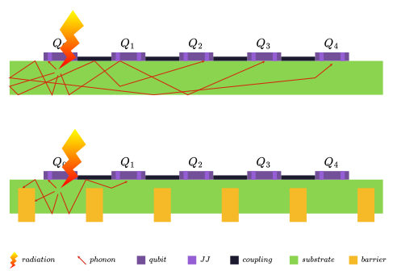
<figcaption class="paper-figure-caption"><b>Fig 1.</b> Fig. 1: Simplified effect of substrate barriers, side view. Without barriers, quasiparticles can easily disperse throughout the quantum chip, causing correlated faults (top). Barriers confine radiation-induced quasiparticle dispersion (bottom).</figcaption>
</figure>
<figure class="paper-figure-card">
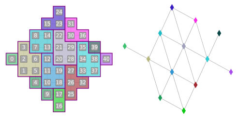
<figcaption class="paper-figure-caption"><b>Fig 2.</b> Fig. 2: The quantum chip’s topology (left) is used to create the barrier hypergraph (right) with a tiling pattern of dimension tilesize = 5, where each tile contains at most five qubits. The total phonon barrier perimeter is highlighted in purple.</figcaption>
</figure>
<figure class="paper-figure-card">
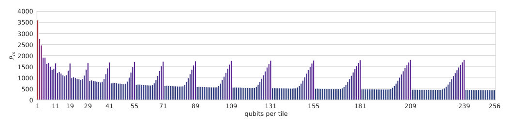
<figcaption class="paper-figure-caption"><b>Fig 3.</b> Fig. 3: The Prs barrier cost per tile size, onto a square lattice topology boasting 1741 qubits. Due to quantum chip topology boundaries, the tiling cost does not decrease monotonically. X-axis labels represent local maximum Prs cost.</figcaption>
</figure>
<figure class="paper-figure-card">
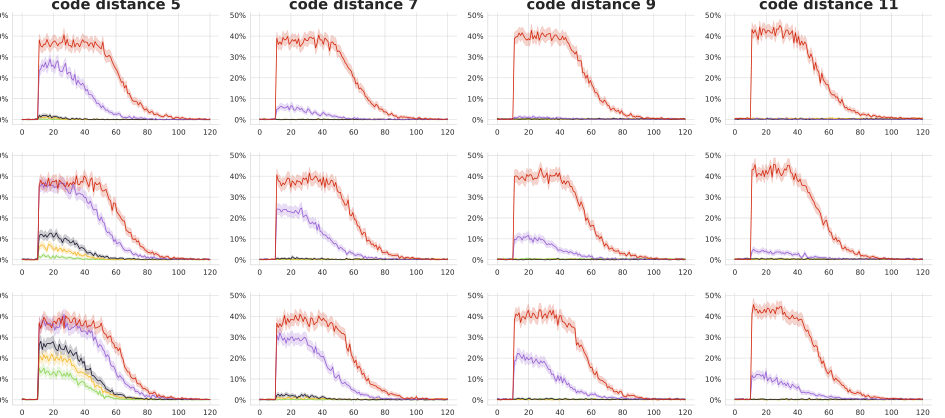
<figcaption class="paper-figure-caption"><b>Fig 4.</b> Fig. 4: Rotated surface code logical error rates with 1, 4 and 9 qubit tiles (top to bottom), varying over increasing rotated surface code distance d (left to right) and barrier permeability bp (plot hues). The case with no barriers acts as the base case, while barrier permeability costs follow Equation 1. The tiling with 4-qubit tiles and 9-qubit tiles incur in barrier tracing costs of 47% and 61%, respectively.</figcaption>
</figure>
<figure class="paper-figure-card">
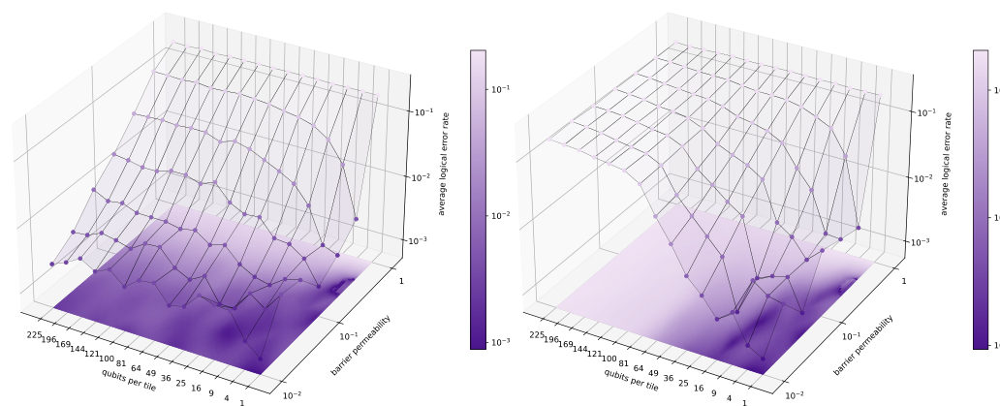
<figcaption class="paper-figure-caption"><b>Fig 5.</b> Fig. 5: Distance-9 rotated surface code average logical error rate (Z-axis, vertical), varying over qubits per tile (X-axis, left) and barrier permeability bp (Y-axis, right), differentiated by tiling positioning.</figcaption>
</figure>
</div>

<p><strong>Summary.</strong> This paper introduces TETRIS-Q, a novel hardware-software co-design approach that combines physical substrate barriers (phonon barriers) with QEC code interleaving. By tiling the superconducting qubit chip, it effectively suppresses correlated radiation-induced faults, achieving dramatic reductions in logical error rates while maintaining low overhead costs.</p>
<p><strong>Why it may be interesting.</strong> This work directly addresses hardware-level noise sources (radiation) in superconducting qubits, which is a critical bottleneck for scaling quantum computation, providing a novel, physical layer mitigation technique beyond standard algorithmic QEC.</p>
<details>
<summary>Detailed structure</summary>
<p><strong>Main problem.</strong> The primary challenge is suppressing error mechanisms, specifically radiation-induced correlated faults, which compromise the effectiveness of Quantum Error Correction (QEC) codes in superconducting qubits.</p>
<p><strong>Main result.</strong> The proposed TETRIS-Q algorithm achieves peak logical error reductions exceeding 99.8% and can reduce the observable transient duration by 80% through the joint use of phonon barriers and QEC interleaving.</p>
<p><strong>Method.</strong> The authors propose TETRIS-Q, a planar-mesh tiling algorithm that selectively combines substrate-level phonon barriers with QEC interleaving to mitigate correlated radiation faults.</p>
<p><strong>Model / system.</strong> The work models superconducting qubits arranged on a planar substrate, utilizing a planar-mesh tiling algorithm to divide the chip into non-overlapping tiles for error mitigation.</p>
<p><strong>Key observables.</strong> Peak logical error reductions ($>99.8\%$), reduction of observable transient duration ($80\%$), and logical error rate reductions (up to three orders of magnitude with joint use).</p>
<p><strong>Important parameters / regimes.</strong> Barrier permeability quality factor ($b_p$), tile size, and the probability distribution of correlated radiation faults.</p>
<p><strong>Assumptions / limitations.</strong> The analysis assumes that radiation-induced faults are spatio-temporally correlated and locally dense, exceeding the scope of standard QEC codes.</p>
<p><strong>Figures summary.</strong> Figure 1 illustrates how substrate barriers confine radiation-induced quasiparticle dispersion. Other figures detail the quantum chip topology, the barrier hypergraph formed by tiling, and comparisons of logical error rates based on tile size and barrier permeability.</p>
<p><strong>Paper structure.</strong> The paper introduces the problem of correlated radiation faults, proposes the TETRIS-Q tiling algorithm combining phonon barriers and QEC interleaving, models the fault suppression using extensive simulations, and presents quantitative results demonstrating high error reduction efficiencies.</p>
</details>
<details>
<summary>Abstract</summary>
<p>The struggle of the hour in quantum computing research is achieving effective suppression of the error mechanisms induced by the interaction of external radiation with superconducting quantum devices. Despite the rapid advancements in quantum error correction (QEC) of recent years, radiation-induced faults are yet to be fully addressed. These events are known to be the cause of simultaneous correlated defects in qubits that lie onto a single substrate, ultimately jeopardising QEC code effectiveness.   In this paper, we propose to selectively combine substrate-level phonon barriers and QEC interleaving via a planar-mesh tiling algorithm, TETRIS-Q, reaching efficient and effective suppression of radiation events. Our cross-layer solution comes at no extra cost in terms of QEC code execution or decoding time. We model and simulate radiation-induced transient faults over a plethora of barrier and QEC interleaving configurations. Through more than 51 million quantum circuit simulations, we show peak logical error reductions of more than $99.8 \%$, together with an $80\%$ reduction of the observable transient duration with permeable barriers. We find that sparser tiling can reach comparable performance to single qubit tiling, prompting cost reductions of upwards of $87 \%$ in barrier tracing. By leveraging independent QEC code interleaving, we measure up to one order of magnitude average logical error rate reductions without the use of permeable barriers, and up to three orders of magnitude with the joint usage of barriers.</p>
</details>
<p><sub><a href="#top">↑ back to top</a></sub></p>

<p><a id="paper-2609.04719"></a></p>
<h3 id="scaling-laws-and-energy-dissipation-in-the-dynamics-of-sle-curve-as-a-1d-turbulence-model"><a href="http://arxiv.org/abs/2609.04719v1">Scaling laws and energy dissipation in the dynamics of SLE curve as a 1D turbulence model</a></h3>
<p><strong>Authors:</strong> Yusuke K. Shibasaki<br>
<strong>Type:</strong> theory · <strong>Category:</strong> statistical mechanics · <strong>PDF:</strong> <a href="https://arxiv.org/pdf/2609.04719v1">https://arxiv.org/pdf/2609.04719v1</a><br>
<strong>Analysis basis:</strong> full PDF text, analyzed in chunks
<strong>Topic relevance:</strong> <code>non-equilibrium universality</code> <strong>3/5</strong> · <code>driven-dissipative phase transition</code> <strong>1/5</strong></p>
<div class="figure-strip-hint">↔ Scroll figures horizontally</div>
<div class="paper-figures-scroll">
<figure class="paper-figure-card">
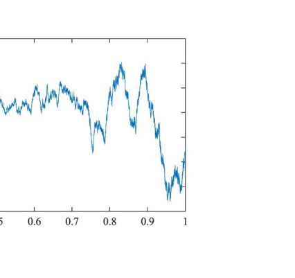
<figcaption class="paper-figure-caption"><b>Fig 1.</b> FIGURE 1. Time series of 𝑥(𝑡) calculated using the diffusion model in Eq. (6). The numerical</figcaption>
</figure>
<figure class="paper-figure-card">
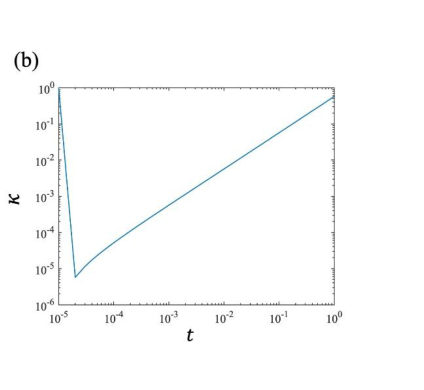
<figcaption class="paper-figure-caption"><b>Fig 2.</b> FIGURE 2. Time series of diffusivity parameter 𝜅. (a) Plot of 𝑡 and 𝜅. (b) Log-log plot of 𝑡 and 𝜅.</figcaption>
</figure>
<figure class="paper-figure-card">
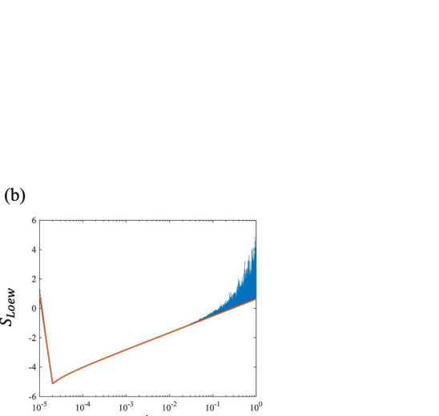
<figcaption class="paper-figure-caption"><b>Fig 3.</b> FIGURE 3. Time series of Loewner entropy 𝑆Loew. (a) Plot of 𝑡 and 𝑆Loew. (b) Semi-log plot of 𝑡</figcaption>
</figure>
</div>

<p><strong>Summary.</strong> This paper successfully demonstrates that Stochastic Loewner Evolution (SLE) can serve as a mathematical model for one-dimensional turbulence. By imposing specific conditions on the diffusivity parameter ($\kappa$) and relating energy dissipation to the Loewner entropy ($S_{Loew}$), the authors show the model satisfies fundamental turbulence scaling laws like Kolmogorov's 4/5th law.</p>
<p><strong>Why it may be interesting.</strong> While the core topic is turbulence, the mathematical machinery—relating complex stochastic processes (SLE) to universal scaling laws (Kolmogorov's)—is highly relevant to non-equilibrium statistical mechanics and the study of critical phenomena in quantum systems.</p>
<details>
<summary>Detailed structure</summary>
<p><strong>Main problem.</strong> The study aims to demonstrate that Stochastic Loewner Evolution (SLE) can model one-dimensional (1D) turbulence and to derive the necessary conditions for this model to satisfy Kolmogorov's 4/5th law.</p>
<p><strong>Main result.</strong> The standard SLE becomes a beneficial model for 1D turbulence if the diffusivity parameter $\kappa$ satisfies a specific scaling relation, and the model's energy dissipation is linked to the Loewner entropy ($S_{Loew}$).</p>
<p><strong>Method.</strong> The authors use analytical derivations by comparing the scaling laws of the 1D diffusion process derived from SLE with the known scaling laws of turbulence, particularly Kolmogorov's 4/5th law.</p>
<p><strong>Model / system.</strong> The model is the Stochastic Loewner Evolution (SLE), which is adapted by applying a time coordinate transformation to yield a 1D diffusion process. This process is then analyzed as a proxy for 1D turbulence dynamics.</p>
<p><strong>Key observables.</strong> Richardson's law scaling ($\langle x(t)^2 
angle \sim t^{3/2}$), Kolmogorov's 4/5th law ($\langle \Delta v(l)^3 
angle$), and Loewner entropy ($S_{Loew}$).</p>
<p><strong>Important parameters / regimes.</strong> Diffusivity parameter ($\kappa$), Loewner entropy ($S_{Loew}$), and the fractal dimension ($d_f$).</p>
<p><strong>Assumptions / limitations.</strong> The analysis assumes a specific time scaling ($t=al$) when comparing scaling laws, and the derivation relies on relating kinetic energy to $S_{Loew}$ via the fractal dimension.</p>
<p><strong>Figures summary.</strong> Figure 2 shows the time series of $\kappa$, confirming $\kappa \sim t^1$. Figure 3 shows the time series of $S_{Loew}$, confirming the scaling relation $S_{Loew} \sim \ln t$.</p>
<p><strong>Paper structure.</strong> The paper first establishes the 1D diffusion process from SLE, then derives the condition on $\kappa$ by matching the scaling laws to Kolmogorov's 4/5th law, and finally confirms these analytical results using numerical simulations.</p>
</details>
<details>
<summary>Abstract</summary>
<p>In this study, we demonstrate the characteristics of the stochastic Loewner evolution (SLE) as a one-dimensional (1D) turbulence model. First, we show that the diffusion process $x(t)$ obtained by the time coordinate change in the SLE becomes the time dependent diffusion process that satisfies Richardson's law of turbulence.Subsequently, we derive the condition on the diffusivity parameter $κ$ such that the diffusion process $x(t)$ satisfies Kolmogorov's 4/5th law, which determines the relation between the mean energy dissipation and velocity in the particles of turbulence. Further mathematical analysis showed that this condition is seen as the condition on Loewner entropy $S_{\mathrm{Loew}}$, which includes the white Gaussian noise term $W_{s}$ in the Loewner driving function of the present model. In addition, the numerical simulations were performed to verify the scaling relations of this 1D turbulence model. These results suggest that the standard SLE becomes a beneficial model of 1D turbulence by introducing an appropriate time coordinate change and imposing the conditions on $κ$ and $S_{\mathrm{Loew}}$.</p>
</details>
<p><sub><a href="#top">↑ back to top</a></sub></p>

<p><a id="paper-2609.05181"></a></p>
<h3 id="dipolar-and-quadrupolar-spin-supersolid-states-in-a-spin-1-triangular-antiferromagnet"><a href="http://arxiv.org/abs/2609.05181v1">Dipolar and quadrupolar spin supersolid states in a spin-1 triangular antiferromagnet</a></h3>
<p><strong>Authors:</strong> Yixuan Huang, Yuan Gao, Wei Li, Seiji Yunoki, Sadamichi Maekawa<br>
<strong>Type:</strong> theory · <strong>Category:</strong> strongly correlated electrons · <strong>PDF:</strong> <a href="https://arxiv.org/pdf/2609.05181v1">https://arxiv.org/pdf/2609.05181v1</a><br>
<strong>Analysis basis:</strong> full PDF text, analyzed in chunks
<strong>Topic relevance:</strong> <code>analog quantum simulation</code> <strong>3/5</strong></p>
<div class="figure-strip-hint">↔ Scroll figures horizontally</div>
<div class="paper-figures-scroll">
<figure class="paper-figure-card">
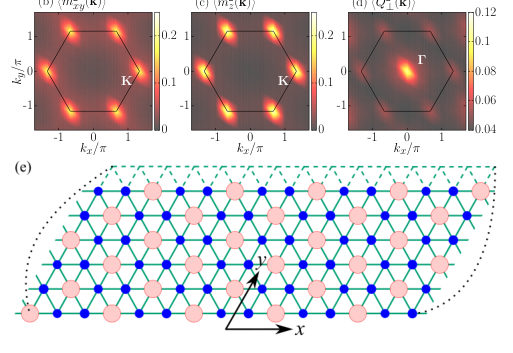
<figcaption class="paper-figure-caption"><b>Fig 1.</b> FIG. 1. Panel (a) sketches the quantum phase diagram with various single-ion anisotropy Dz/J and magnetic field hz/J. The symbols represent parameter points studied us- ing DMRG methods. The shaded regimes indicate the vanish of quadrupolar order in the thermodynamic limit within the dipolar SS phases. Panels (b) and (c) show the transverse and longitudinal dipolar orders defined in Eq. 2, respectively. Panel (d) shows the quadrupolar order defined in Eq. 3. Panel (e) shows the real-space distribution of ⟨Sz i ⟩. The blue solid circles represent positive ⟨Sz i ⟩, and red shaded circles repre- sent negative ⟨Sz i ⟩with radius proportional to its magnitude. The red shaded circles have ⟨Sz i...</figcaption>
</figure>
<figure class="paper-figure-card">
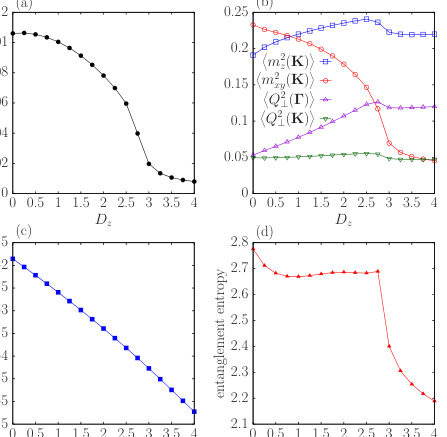
<figcaption class="paper-figure-caption"><b>Fig 2.</b> FIG. 2. (a) The superfluid stiffness, (b) various order pa- rameters, (c) the ground-state energy per site, and (d) the entanglement entropy for various Dz at hz = 0. The results are obtained on a fixed lattice of N = 36×6. We note that for larger Dz &gt; 1.75 the ground state in the total Sz = 0 sector converges to a stripe order with higher energy, which could be due to finite-size effect. In practice, the bulk properties of the ground state in the total Sz = 2 sector are used to approxi- mate the hz = 0 limit where most magnetization is found to distribute near the open boundary in the x direction.</figcaption>
</figure>
<figure class="paper-figure-card">
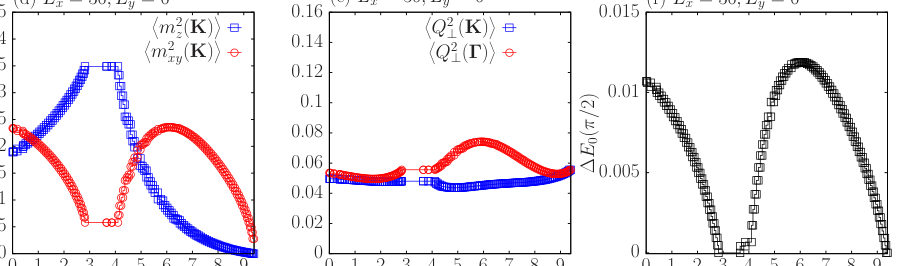
<figcaption class="paper-figure-caption"><b>Fig 3.</b> FIG. 3. Panel (a) and panels (b-c) show the finite-size scaling in Lx and Ly for various orders, respectively. Panels (d), (e), and (f) show the evolution of various orders and superfluid stiffness for different magnetic fields hz on a fixed lattice size. All results are obtained at Dz = 0.</figcaption>
</figure>
<figure class="paper-figure-card">
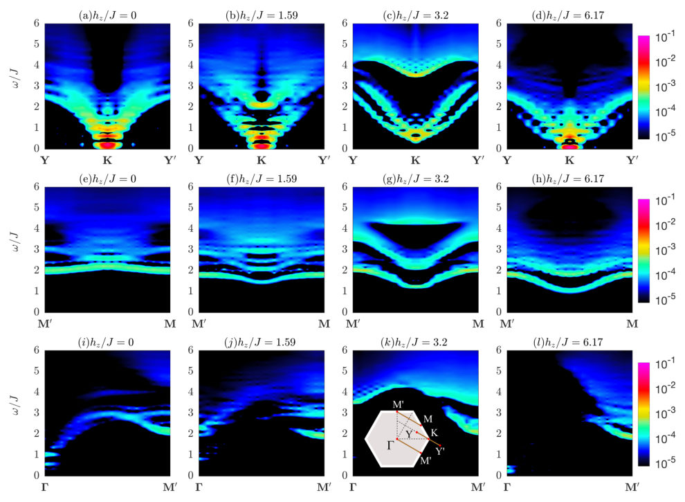
<figcaption class="paper-figure-caption"><b>Fig 4.</b> FIG. 4. The transverse component of the dynamical spin structure factor χxy(k, ω) for various hz at Dz = 0. Panels (a), (e) and (i) are obtained in the dipolar YSS at zero field. Panels (b), (f) and (j) are obtained in the dipolar YSS at finite field of hz = 1.59. Panels (c), (g) and (k) are obtained in the UUD phase. Panels (d), (h) and (l) are obtained in the dipolar VSS phase. Results in the SS and UUD phases are calculated on the lattice of N = 36 × 6 and N = 48 × 6, respectively.</figcaption>
</figure>
<figure class="paper-figure-card">
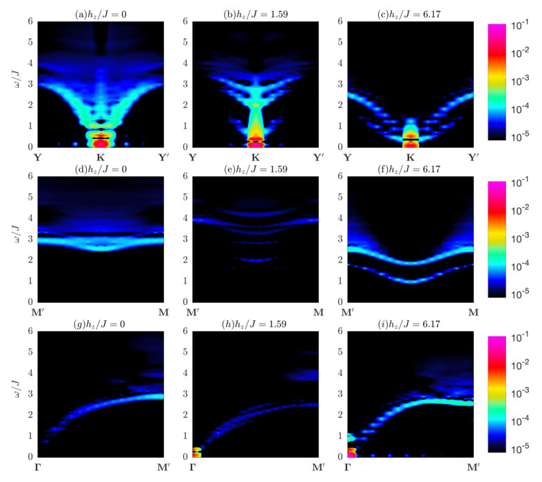
<figcaption class="paper-figure-caption"><b>Fig 5.</b> FIG. 5. Same as Fig. 4, but for the longitudinal component of the dynamical spin structure factor χz(k, ω). In the UUD state, the dynamical spin structure factor is dominated by χxy(k, ω), thus χz(k, ω) is not shown here.</figcaption>
</figure>
</div>

<p><strong>Summary.</strong> This paper uses DMRG simulations to map the quantum phase diagram of a spin-1 antiferromagnet on a triangular lattice. It identifies distinct dipolar and quadrupolar spin supersolid states arising from the competition between frustration, anisotropy, and magnetic fields. The results offer theoretical predictions for experimental observables like the spin superfluid stiffness and excitation spectra.</p>
<p><strong>Why it may be interesting.</strong> The detailed mapping of quantum phases, especially the coexistence of superfluidity and broken translational symmetry, provides a rich theoretical framework applicable to understanding exotic quantum ground states in frustrated magnets.</p>
<details>
<summary>Detailed structure</summary>
<p><strong>Main problem.</strong> The study aims to theoretically understand the complex interplay between geometric frustration, single-ion anisotropy, and external magnetic fields in driving distinct spin supersolid (SS) phases within a spin-1 quantum magnet.</p>
<p><strong>Main result.</strong> The research identifies and maps out distinct dipolar and quadrupolar spin supersolid states, showing how the system transitions between these phases depending on the relative strengths of anisotropy ($D_z$) and the magnetic field ($h_z$).</p>
<p><strong>Method.</strong> The study employs systematic numerical simulations using Density Matrix Renormalization Group (DMRG) methods to map the quantum phase diagram.</p>
<p><strong>Model / system.</strong> The model is the spin-1 antiferromagnetic Heisenberg model defined on a triangular lattice, governed by a Hamiltonian incorporating exchange coupling, single-ion anisotropy ($D_z$), and an out-of-plane magnetic field ($h_z$).</p>
<p><strong>Key observables.</strong> Order parameters (dipolar and quadrupolar), spin superfluid stiffness ($
ho_s$), and the dynamical spin structure factor (revealing Goldstone modes and roton minima).</p>
<p><strong>Important parameters / regimes.</strong> The phase diagram is parameterized by the single-ion anisotropy $D_z$ and the magnetic field $h_z$. Key regimes include zero field, intermediate fields (UUD phase), and high fields.</p>
<p><strong>Assumptions / limitations.</strong> The primary assumption is the applicability of the spin-1 Heisenberg model to describe the magnetic behavior of specific triangular-lattice antiferromagnets.</p>
<p><strong>Figures summary.</strong> The figures are expected to present the quantum phase diagram ($D_z/J$ vs $h_z/J$) and show calculated order parameters (dipolar and quadrupolar) across different phases.</p>
<p><strong>Paper structure.</strong> The paper systematically analyzes the quantum phase diagram by varying $D_z$ and $h_z$, characterizing the resulting supersolid phases using multiple order parameters and calculating the dynamical structure factor to predict experimental signatures.</p>
</details>
<details>
<summary>Abstract</summary>
<p>We present a systematic numerical study of the spin-1 antiferromagnetic Heisenberg model on the triangular lattice in an out-of-plane magnetic field, using Density Matrix Renormalization Group (DMRG) methods. By mapping out the quantum phase diagram as a function of the single-ion anisotropy $D_z$ and magnetic field, we identify distinct dipolar and quadrupolar spin supersolid states, characterized by spontaneous U(1) symmetry breaking with finite spin superfluid stiffness coexisting with longitudinal translational symmetry breaking. At zero field, the dipolar spin supersolid with a 'Y'-type spin configuration persists down to $D_z = 0$, whereas the quadrupolar spin supersolid prevails at large $D_z$. At intermediate fields, the phase diagram is dominated by an up-up-down phase. At high fields below saturation, a quadrupolar spin superfluid emerges in the large-$D_z$ regime, whereas a dipolar spin supersolid with a 'V'-type spin configuration dominates at small $D_z$. These phases are characterized through their order parameters and spin superfluid stiffness using calculations on various system sizes. Furthermore, the dynamical spin structure factor is obtained across the phase diagram, where characteristic spectral signatures of different phases are observed, including the gapless Goldstone mode and the roton-like minima. These features are directly accessible to inelastic neutron scattering experiments. Our results provide a theoretical understanding of the interplay between frustrations, anisotropy, and Zeeman interactions in driving distinct spin supersolid phases in the spin-1 system, which are relevant to various triangular-lattice antiferromagnets such as Na$_2$BaNi(PO$_4$)$_2$ and K$_2$Ni(SeO$_3$)$_2$.</p>
</details>
<p><sub><a href="#top">↑ back to top</a></sub></p>

<p><a id="paper-2609.04997"></a></p>
<h3 id="learning-unknown-stabilizer-codes-using-product-measurements"><a href="http://arxiv.org/abs/2609.04997v1">Learning unknown stabilizer codes using product measurements</a></h3>
<p><strong>Authors:</strong> Heather Leitch, Sowmya Tirukkovalluri, Yingkai Ouyang<br>
<strong>Type:</strong> theory · <strong>Category:</strong> quantum information and computing · <strong>PDF:</strong> <a href="https://arxiv.org/pdf/2609.04997v1">https://arxiv.org/pdf/2609.04997v1</a><br>
<strong>Analysis basis:</strong> full PDF text, analyzed in chunks
<strong>Topic relevance:</strong> <code>quantum measurements</code> <strong>3/5</strong></p>
<div class="figure-strip-hint">↔ Scroll figures horizontally</div>
<div class="paper-figures-scroll">
<figure class="paper-figure-card">
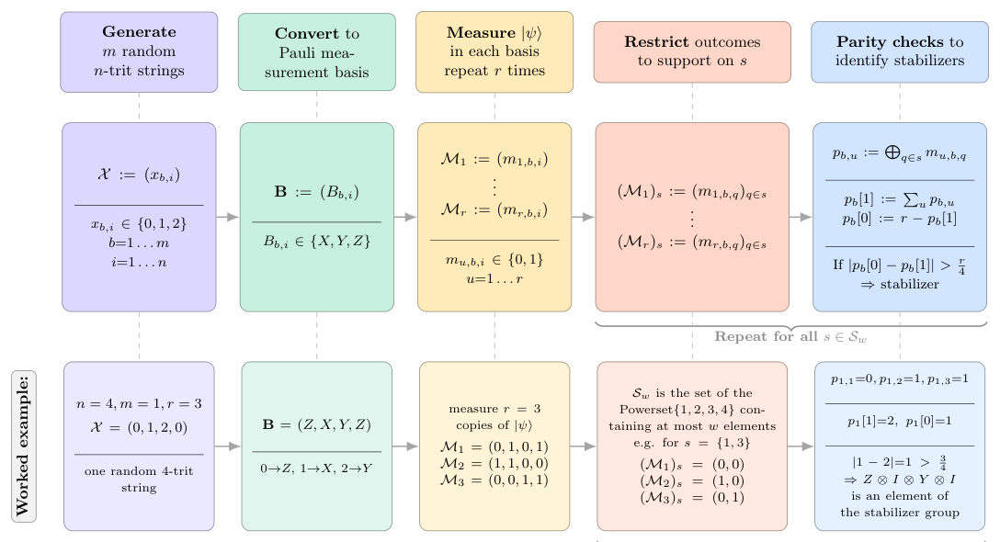
<figcaption class="paper-figure-caption"><b>Fig 1.</b> FIG. 1. Overview of the algorithm which allow us to identify the stabilizer generators of a stabilizer code, given any N codewords. The first 3 steps are explained in further detail in sec. II A and the final 2 in sec. II B.</figcaption>
</figure>
</div>

<p><strong>Summary.</strong> This paper details an algorithm to learn the stabilizer generators of an unknown quantum error correcting code using only random product measurements on multiple copies of the code state. It provides rigorous theoretical bounds showing that this characterization is possible with a polylogarithmic number of measurements for practical codes like qLDPC. This offers a powerful, structure-agnostic tool for verifying and characterizing quantum hardware.</p>
<p><strong>Why it may be interesting.</strong> While focused on abstract codes, the reliance on product measurements and statistical inference techniques is highly relevant to experimental quantum information processing, particularly in characterizing noisy quantum hardware.</p>
<details>
<summary>Detailed structure</summary>
<p><strong>Main problem.</strong> The core challenge is efficiently characterizing unknown quantum error correcting codes, specifically by learning their defining stabilizer generators.</p>
<p><strong>Main result.</strong> The authors present an algorithm that can learn these generators using only random single-qubit measurements on $N$ copies of the code state, requiring only a polylogarithmic number of states for qLDPC codes.</p>
<p><strong>Method.</strong> The method involves using random product measurements on multiple copies of the state and performing parity checks on the measurement outcomes to statistically identify the commuting Pauli operators that form the stabilizer group.</p>
<p><strong>Model / system.</strong> The focus is on stabilizer codes, which are central to fault-tolerant quantum computation. The analysis is particularly applied to quantum Low-Density Parity-Check (qLDPC) codes.</p>
<p><strong>Key observables.</strong> The primary observables are the measurement outcomes (parity checks) from multiple copies of the state, used to determine the stabilizer generators $G_1, \dots, G_g$.</p>
<p><strong>Important parameters / regimes.</strong> Key parameters include $N$ (number of copies), $n$ (number of qubits), $g$ (number of generators), and the error probability $p$ associated with the depolarizing channel.</p>
<p><strong>Assumptions / limitations.</strong> The analysis assumes the error model is a depolarizing channel and relies on deriving lower bounds for $N$ based on statistical confidence intervals (e.g., Chernoff bounds).</p>
<p><strong>Figures summary.</strong> Figures illustrate the overall algorithm flow, detailing steps from generating random measurement bases to performing parity checks to identify potential stabilizer generators, with examples shown for small qubit systems.</p>
<p><strong>Paper structure.</strong> The paper introduces the problem, details the measurement process (Algorithm 1), presents the procedure for identifying generators via parity checks (Algorithm 2), and provides rigorous proofs establishing the required number of copies ($N$) and the overall success probability.</p>
</details>
<details>
<summary>Abstract</summary>
<p>Efficiently characterizing quantum error correcting codes is a key challenge on the path to fault-tolerant quantum computation. Stabilizer codes, a central class of such codes, are defined by a set of stabilizer generators. Here, we present an algorithm that uses random single-qubit measurements to learn the stabilizer generators of any stabilizer code from $N$ copies of stabilizer states in its codespace, requiring no prior knowledge of the code's structure. This also enables verification that a device implements its intended code. We derive a lower bound on $N$ needed to recover the stabilizer generators with high probability, together with a bound on the algorithm's overall probability of success. When applied to quantum low-density parity-check (qLDPC) codes, a leading candidate for practical fault-tolerant architectures, our approach requires a number of states that scales polylogarithmically with $n$, the number of qubits.</p>
</details>
<p><sub><a href="#top">↑ back to top</a></sub></p>

<p><a id="paper-2609.05313"></a></p>
<h3 id="sar-and-insar-change-detection-with-quantum-generative-models"><a href="http://arxiv.org/abs/2609.05313v1">SAR and InSAR Change Detection with Quantum Generative Models</a></h3>
<p><strong>Authors:</strong> Samwel K. Sekwao, Shaunak De, Alexis Hocken, Scott Staniewicz, Evgeny Epifanovsky, Craig Stringham, Gordon Farquharson, Martin Roetteler, Panagiotis Kl. Barkoutsos, Jason Iaconis<br>
<strong>Type:</strong> both · <strong>Category:</strong> other · <strong>PDF:</strong> <a href="https://arxiv.org/pdf/2609.05313v1">https://arxiv.org/pdf/2609.05313v1</a><br>
<strong>Analysis basis:</strong> full PDF text, analyzed in chunks
<strong>Topic relevance:</strong> <code>QC/QI experiment</code> <strong>3/5</strong></p>
<div class="figure-strip-hint">↔ Scroll figures horizontally</div>
<div class="paper-figures-scroll">
<figure class="paper-figure-card">
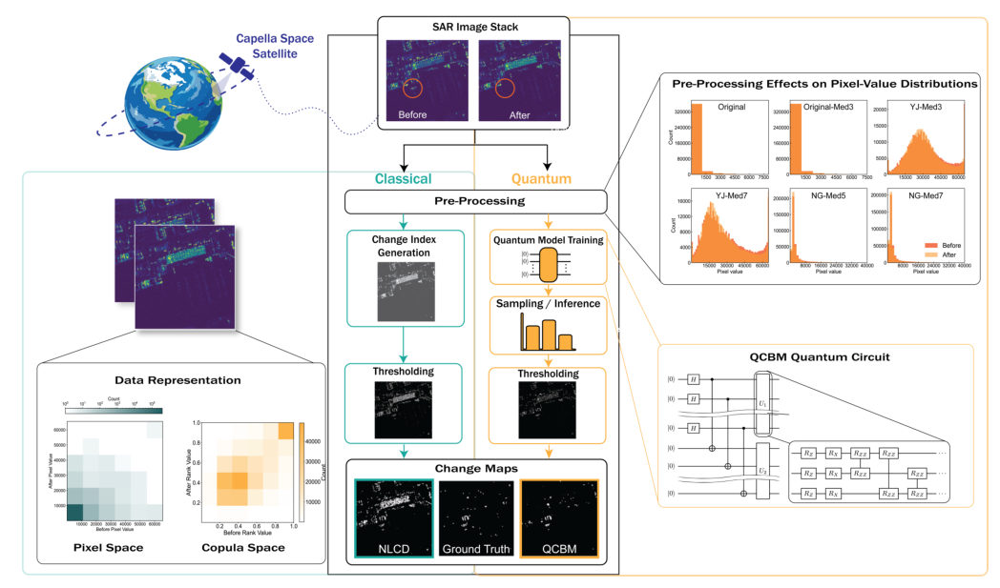
<figcaption class="paper-figure-caption"><b>Fig 1.</b> Figure 1: Overview schematic of classical and quantum pipelines for processing a given before and after SAR image stack acquired from Capella Space Satellite. Pixel-value distributions of the before and after images for the different preprocessing configurations of the Miramar1 dataset. The original Miramar1 and median-filtered (Med)/non-Gaussian (NG)transformed datasets exhibit strongly non-Gaussian distributions, whereas the Yeo–Johnson (YJ) transformed datasets exhibit more Gaussian-like distributions. The histograms and heatmaps illustrate the effect of preprocessing on the statistical characteristics of the before and after image pixels. The quantum circuits used in the QCBM method are...</figcaption>
</figure>
<figure class="paper-figure-card">
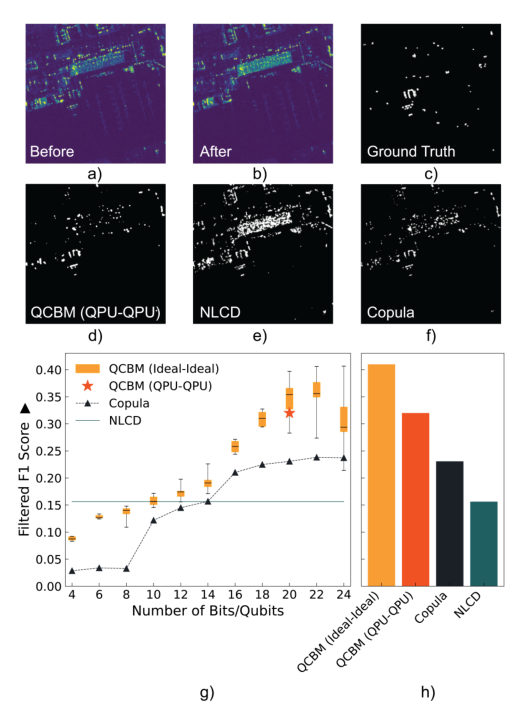
<figcaption class="paper-figure-caption"><b>Fig 2.</b> Figure 2: Qualitative comparison of change-detection re- sults for the non-Gaussian Miramar1-Med3 dataset. The top row shows the a) before image, b) after image, and c) ground-truth change mask, while the middle row shows the masks generated by d) QCBM, e) NLCD, and f) Cop- ula. The QCBM training and inference were both per- formed on IonQ’s Forte-Enterprise QPU. g) Filtered F1 scores for QCBM (training and inference performed with an ideal simulator), Copula, and NLCD at varying num- ber of bits vs qubits for the Miramar1-Med3 dataset. h) Comparison of the best F1 scores for models trained with 20 bits/qubits.</figcaption>
</figure>
<figure class="paper-figure-card">
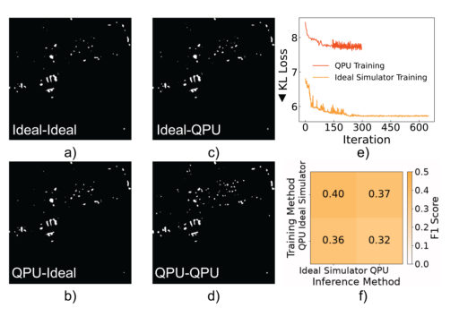
<figcaption class="paper-figure-caption"><b>Fig 3.</b> Figure 3: Effect of QPU execution on QCBM training and inference for image change detection on Miramar1-Med3 dataset. The change masks and corresponding filtered F1 scores compare four combinations of ideal-simulator and QPU training and inference (a-d). For QPU execution, training was performed on IonQ’s Forte QPU, whereas in- ference was performed on IonQ’s Forte-Enterprise QPU. e) The KL-loss curves compare the convergence behavior of ideal-simulator and QPU training, while f) the heatmap summarizes the filtered F1 scores across the four configu- rations.</figcaption>
</figure>
<figure class="paper-figure-card">
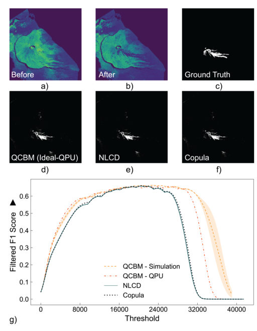
<figcaption class="paper-figure-caption"><b>Fig 4.</b> Figure 4: InSAR volcano lava flow change detection with QCBM and classical baselines. a) Before and b) after In- SAR images are shown with the c) ground-truth change mask and the masks generated by d) QCBM, e) NLCD and f) Copula. The QCBM was trained on an ideal quan- tum simulator with inference performed on IonQ’s Forte- Enterprise QPU. g) Threshold dependence of InSAR lava- flow change-detection performance. F1 score after uni- form filtering as a function of the detection threshold for QCBM, NLCD and Copula on the InSAR lava-flow dataset. The ideal-simulator QCBM curve shows the mean over 10 independent training runs, with the shaded band indicating one standard deviation.</figcaption>
</figure>
</div>

<p><strong>Summary.</strong> This paper applies quantum machine learning to enhance change detection in satellite radar imagery (SAR/InSAR). It replaces traditional, statistically limited background estimators with a Quantum Circuit Born Machine (QCBM) trained on the joint distribution in Copula space. The results show that this quantum approach substantially improves detection accuracy, particularly for noisy or sparse real-world data, demonstrating practical feasibility on trapped-ion quantum hardware.</p>
<p><strong>Why it may be interesting.</strong> While the application is remote sensing, the core methodology involves using parameterized quantum circuits (QCBMs) to model complex, high-dimensional, correlated probability distributions (Copulas), which is a key area in quantum machine learning.</p>
<details>
<summary>Detailed structure</summary>
<p><strong>Main problem.</strong> The core problem is improving change detection in SAR/InSAR imagery, which is limited by background estimators that fail when observed pixel statistics are sparse.</p>
<p><strong>Main result.</strong> The Quantum Circuit Born Machine (QCBM) significantly outperforms classical baselines, especially when image statistics are sparse, demonstrating feasibility on trapped-ion hardware.</p>
<p><strong>Method.</strong> The authors replace empirical conditional expectation estimators with a generative model sampled from a QCBM trained in Copula space.</p>
<p><strong>Model / system.</strong> The system involves processing SAR/InSAR image pairs (before/after) using quantum circuits implemented on IonQ trapped-ion processors. The QCBM learns the joint distribution of pixel intensities in Copula space.</p>
<p><strong>Key observables.</strong> Filtered F1 score (for change detection masks), and the performance comparison between QCBM, classical estimators (NLCD, Copula), and hardware execution fidelity.</p>
<p><strong>Important parameters / regimes.</strong> Sub-meter resolution, heavy-tailed marginals, $n$-qubit registers, and the number of measurement shots (e.g., 100,000 for inference).</p>
<p><strong>Assumptions / limitations.</strong> The approach assumes modeling the joint distribution via its copula, and performance comparisons are made against classical methods under various preprocessing assumptions.</p>
<p><strong>Figures summary.</strong> Figures compare qualitative change-detection masks for non-Gaussian data and illustrate the performance drop when moving from ideal quantum simulation to actual QPU execution.</p>
<p><strong>Paper structure.</strong> The paper introduces the problem, proposes the QCBM replacement for background estimation, details the quantum circuit training/inference process, and validates the method using multiple real-world SAR/InSAR datasets.</p>
</details>
<details>
<summary>Abstract</summary>
<p>Change detection in synthetic aperture radar (SAR) and interferometric synthetic aperture radar (InSAR) underpins disaster response, infrastructure monitoring and land-use enforcement. Detection is limited by the background estimator, which conventionally forms a conditional expectation directly from observed pixel statistics and degrades where those statistics are sparse, including the regime produced by the heavy-tailed marginals of sub-meter-resolution radars. In this work, we integrate state-of-the-art satellite imagery with quantum machine learning on IonQ trapped-ion-based quantum processors. By replacing the empirical conditional with a quantum circuit Born machine (QCBM)-sampled generative model in Copula space, we substantially improve change detection on sparse real-world images. On Capella Space satellite image acquisitions, the generative estimator matches conventional methods when the observed statistics are adequate, and substantially outperforms them when they are not. Executing the trained model on IonQ trapped-ion based hardware reproduces the results of the ideal and noisy simulations and demonstrates up to par, or even better, performance with the classical state-of-the-art methods. For a SAR dataset of an airport, QPU circuit evaluations for both training and inference achieved a maximized filtered F1 score of 0.32, compared with 0.16 and 0.24 for the two classical baselines. For an InSAR dataset of a volcanic lava flow, all three methods reached a maximum filtered F1 of approximately 0.66. These experiments demonstrate the feasibility of executing a QCBM-based background estimator on trapped-ion hardware. We further demonstrate that the QCBM method successfully extends to interferometric coherence data, achieving performance comparable to classical approaches.</p>
</details>
<p><sub><a href="#top">↑ back to top</a></sub></p>

<p><a id="paper-2609.04788"></a></p>
<h3 id="shapley-valuation-of-finite-copy-quantum-data-depends-on-physical-access"><a href="http://arxiv.org/abs/2609.04788v1">Shapley Valuation of Finite-Copy Quantum Data Depends on Physical Access</a></h3>
<p><strong>Authors:</strong> Qipeng Qian, Yuntao Qian<br>
<strong>Type:</strong> theory · <strong>Category:</strong> quantum information and computing · <strong>PDF:</strong> <a href="https://arxiv.org/pdf/2609.04788v1">https://arxiv.org/pdf/2609.04788v1</a><br>
<strong>Analysis basis:</strong> full PDF text, analyzed in chunks
<strong>Topic relevance:</strong> <code>quantum measurements</code> <strong>3/5</strong></p>
<div class="figure-strip-hint">↔ Scroll figures horizontally</div>
<div class="paper-figures-scroll">
<figure class="paper-figure-card">
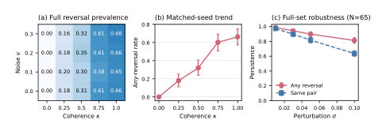
<figcaption class="paper-figure-caption"><b>Fig 1.</b> FIG. 1. Access-induced ranking reversals and their robustness. (a) Reversal prevalence across coherence κ and depolarizing noise ν. (b) The matched-seed trend as coherence increases. (c) Persistence of the 65 baseline reversal instances under increasing perturbation strength σ, reporting both re- tention of any reversal and retention of the same reversed contributor pair. Error bars represent 95% instance-bootstrap confidence intervals.</figcaption>
</figure>
<figure class="paper-figure-card">
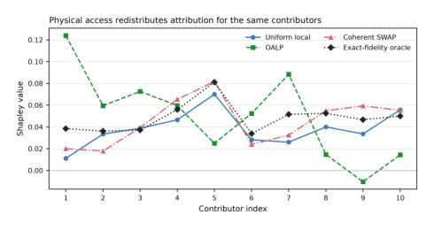
<figcaption class="paper-figure-caption"><b>Fig 2.</b> FIG. 2. Physical access redistributes attribution for the same contributors. Shapley values of the 10 fixed TFIM contributors under uniform local Pauli access, observable- aware local Pauli access (OALP), coherent reference-assisted SWAP access, and the exact-feature oracle. All methods use the same contributors, quantum states, feature coordinates, learner, and coalition definitions; only the physical procedure used to obtain the features is changed.</figcaption>
</figure>
<figure class="paper-figure-card">
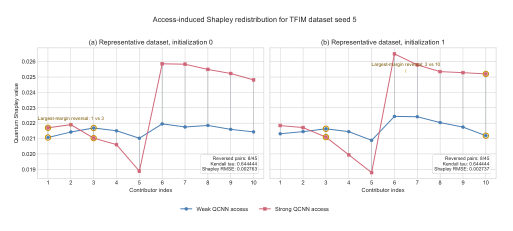
<figcaption class="paper-figure-caption"><b>Fig 3.</b> FIG. 4. Access-induced Shapley redistribution in a representative QCNN dataset. Weak and Strong QCNN Shapley values for TFIM dataset seed 5 under two matched initialization schedules. The highlighted pair in each panel is the largest-margin ranking reversal for that initialization.</figcaption>
</figure>
<figure class="paper-figure-card">
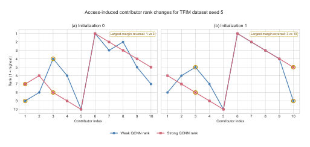
<figcaption class="paper-figure-caption"><b>Fig 4.</b> FIG. 5. Physical pooling access changes contributor rankings. The same seed-5 Shapley vectors are converted to contributor ranks, with rank one placed at the top. Cross- ings between the Weak and Strong rank curves make the access-induced ordering changes explicit under both matched initializations.</figcaption>
</figure>
<figure class="paper-figure-card">
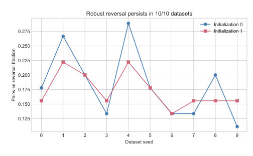
<figcaption class="paper-figure-caption"><b>Fig 5.</b> FIG. 6. Access-induced ranking reversals persist across datasets and initializations. Pairwise Weak–Strong re- versal fractions for all 10 pre-specified TFIM datasets under two matched QCNN initialization schedules. Every dataset contains at least one non-near-tie reversal under each initial- ization.</figcaption>
</figure>
</div>

<p><strong>Summary.</strong> This work introduces an access-aware Shapley valuation framework for quantum data, recognizing that the value of quantum states depends on how they can be physically measured. It proves that changing the allowed measurement protocols (physical access model) directly alters the Shapley attribution of value among data contributors. This establishes that quantum data value is an emergent property of the entire physical process, not just the initial quantum state.</p>
<p><strong>Why it may be interesting.</strong> It provides a rigorous theoretical framework for understanding how physical limitations (measurement constraints) fundamentally alter the perceived utility and attribution of quantum information, which is crucial for quantum machine learning applications.</p>
<details>
<summary>Detailed structure</summary>
<p><strong>Main problem.</strong> The paper addresses how the value assigned to finite-copy quantum data changes when the physical access model—the allowed measurement protocols—is altered.</p>
<p><strong>Main result.</strong> Quantum data value is not an intrinsic property of the states alone; rather, it emerges from the complex interaction between the quantum states, the physical access model, and the downstream learning task.</p>
<p><strong>Method.</strong> The authors develop an access-aware Shapley valuation framework, establishing exact mathematical connections between physical-access advantages and the resulting attribution shifts in the Shapley value vector.</p>
<p><strong>Model / system.</strong> The system involves finite-copy quantum data (unknown quantum states $
ho_{    heta, S}$) supplied by multiple contributors, processed under a specific physical access model $R$ (a set of allowed quantum measurements).</p>
<p><strong>Key observables.</strong> Shapley value ($\phi$), Physical-Access Advantage ($\delta$), and the Shapley Shift Vector ($\Delta_{R 	o R'}$).</p>
<p><strong>Important parameters / regimes.</strong> The physical access model $R$, the set of contributors $N$, and the downstream learning task $t$.</p>
<p><strong>Assumptions / limitations.</strong> The analysis assumes that access models share the same optimal no-data risk ($R_{\emptyset}$) and that the comparison is made by varying the physical access protocols while keeping the underlying states and task fixed.</p>
<p><strong>Figures summary.</strong> Not specified, but numerical experiments are mentioned to demonstrate that identical quantum samples receive different values based only on the physical access model.</p>
<p><strong>Paper structure.</strong> The paper follows a structure of defining the setting, developing the core theory (including theorems on nested and arbitrary access models), deriving operational representations, and concluding with numerical validation.</p>
</details>
<details>
<summary>Abstract</summary>
<p>Data valuation asks how learning utility should be attributed to training data contributors. Most classical formulations begin after data have become reusable records, so the physical readout of the data is effectively fixed. Finite-copy quantum data are different: unknown states are consumable physical systems, and the same supplied states and downstream task can yield different Shapley values under different physical access models. Our framework makes this dependence explicit by treating physical access as a component of quantum data valuation itself. We establish an exact connection between physical-access advantage and contributor-level data valuation. For nested access models, we prove that the maximal downstream utility gain enabled by richer physical access exactly determines the largest symmetric Shapley ranking-reversal margin. More generally, for arbitrary access-model pairs, including non-nested ones, we derive an exact geometric characterization of the possible shifts of the full Shapley attribution vector. For fixed learning pipelines, we further obtain an operational Shapley-observable representation for finite-copy valuation. Numerical experiments demonstrate that identical quantum samples can receive different values and rankings when only the physical access model is changed. These results establish that quantum data value is not an intrinsic property of the underlying states alone, but emerges from the interaction between quantum states, physical access, and the downstream learning task.</p>
</details>
<p><sub><a href="#top">↑ back to top</a></sub></p>

<p><a id="paper-2609.04431"></a></p>
<h3 id="sic-dimension-towers-via-cyclotomic-polynomials"><a href="http://arxiv.org/abs/2609.04431v1">SIC dimension towers via cyclotomic polynomials</a></h3>
<p><strong>Authors:</strong> Gary McConnell<br>
<strong>Type:</strong> theory · <strong>Category:</strong> other · <strong>PDF:</strong> <a href="https://arxiv.org/pdf/2609.04431v1">https://arxiv.org/pdf/2609.04431v1</a><br>
<strong>Analysis basis:</strong> full PDF text, analyzed in chunks
<strong>Topic relevance:</strong> <code>quantum measurements</code> <strong>3/5</strong></p>
<div class="figure-strip-hint">↔ Scroll figures horizontally</div>
<div class="paper-figures-scroll">
<figure class="paper-figure-card">
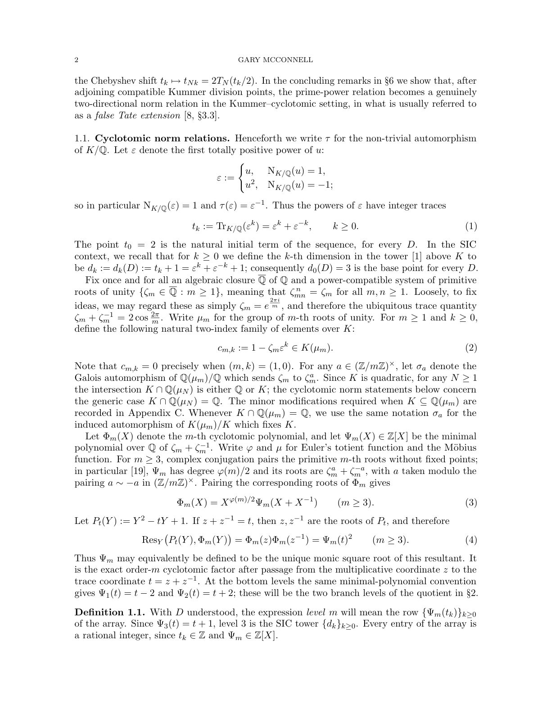
<figcaption class="paper-figure-caption"><b>Fig 1.</b> Low-resolution page preview, page 2</figcaption>
</figure>
<figure class="paper-figure-card">
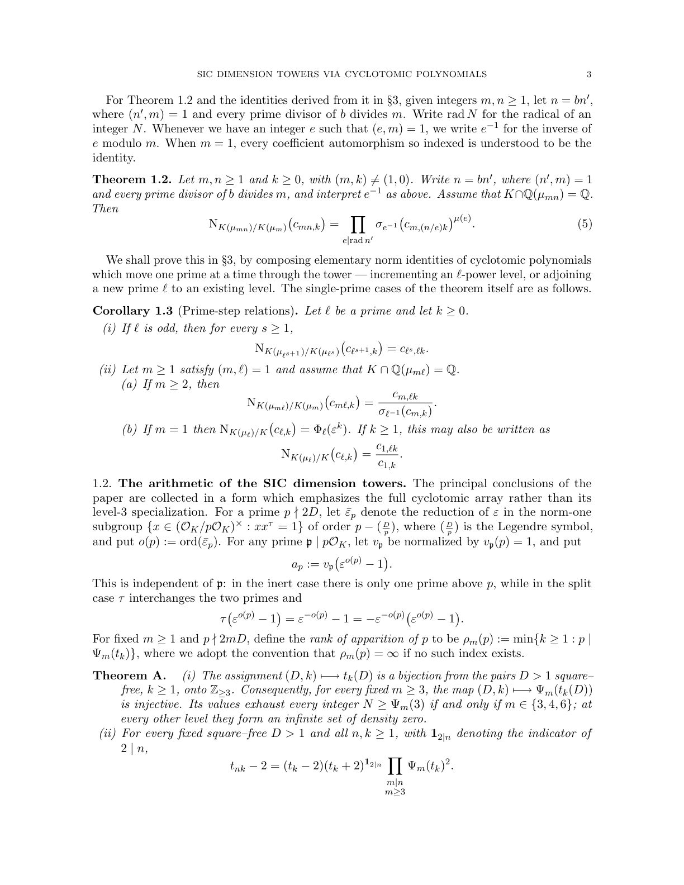
<figcaption class="paper-figure-caption"><b>Fig 2.</b> Low-resolution page preview, page 3</figcaption>
</figure>
<figure class="paper-figure-card">
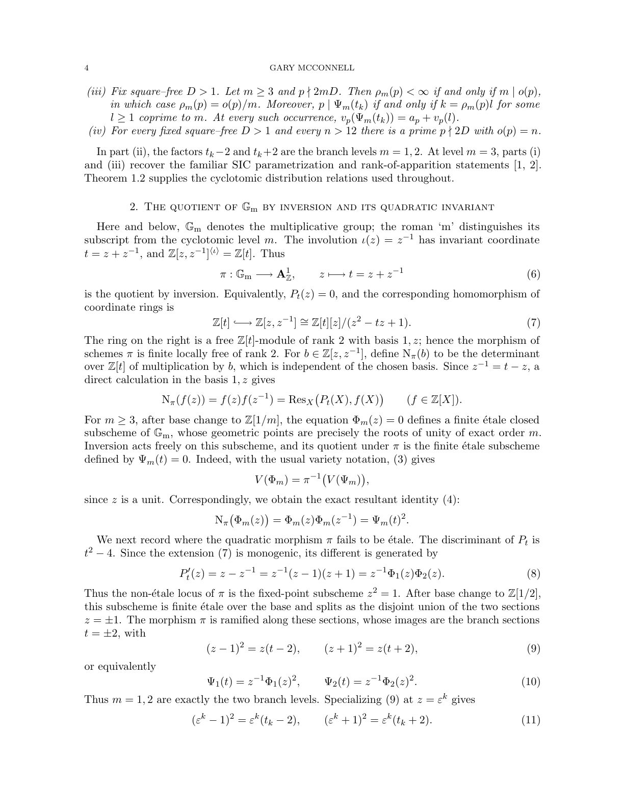
<figcaption class="paper-figure-caption"><b>Fig 3.</b> Low-resolution page preview, page 4</figcaption>
</figure>
<figure class="paper-figure-card">
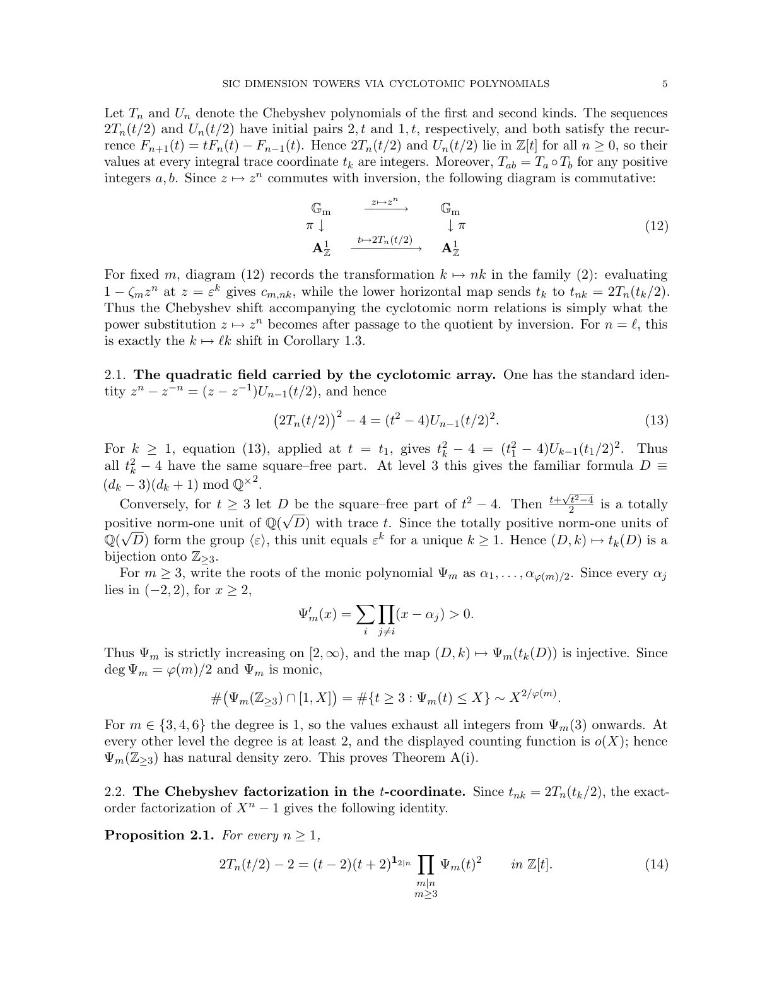
<figcaption class="paper-figure-caption"><b>Fig 4.</b> Low-resolution page preview, page 5</figcaption>
</figure>
<figure class="paper-figure-card">
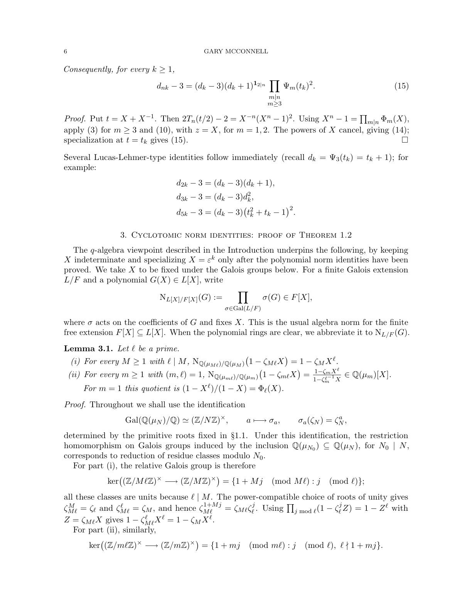
<figcaption class="paper-figure-caption"><b>Fig 5.</b> Low-resolution page preview, page 6</figcaption>
</figure>
</div>

<p><strong>Summary.</strong> This paper establishes a deep number-theoretic structure theorem for the dimension towers arising from the SIC-POVM conjecture over a real quadratic field. It embeds this quantum-related problem into the framework of cyclotomic arrays, relating it to advanced topics like Leopoldt's conjecture and $p$-adic L-functions. The work uses sophisticated tools from algebraic number theory to reveal underlying arithmetic symmetries.</p>
<p><strong>Why it may be interesting.</strong> While highly abstract, the connection between quantum information concepts (SIC-POVM) and deep number theory (cyclotomic fields, $p$-adic L-functions) suggests potential arithmetic constraints on quantum system parameters.</p>
<details>
<summary>Detailed structure</summary>
<p><strong>Main problem.</strong> The paper proves a structure theorem for dimension towers arising from the number-theoretic formulation of Zauner's SIC-POVM conjecture over a real quadratic field.</p>
<p><strong>Main result.</strong> The SIC dimension tower is shown to be the level $m=3$ row of an infinite two-dimensional cyclotomic array, linking the conjecture to broader arithmetic contexts like Leopoldt's conjecture.</p>
<p><strong>Method.</strong> The analysis heavily employs algebraic number theory, utilizing cyclotomic polynomials, field norms, and $p$-adic valuations to establish deep structural identities.</p>
<p><strong>Model / system.</strong> The theoretical framework centers on the SIC-POVM conjecture, analyzed using algebraic structures derived from a real quadratic field $K=\mathbb{Q}(\sqrt{D})$ and its associated cyclotomic extensions.</p>
<p><strong>Key observables.</strong> The SIC dimension tower $\{d_k\}$, the cyclotomic array $\{\Psi_m(t_k)\}$, and the rank of apparition $
ho_m(p)$ are key observables.</p>
<p><strong>Important parameters / regimes.</strong> The fundamental unit $\varepsilon$ of $K$, the trace $t_k = \varepsilon^k + \varepsilon^{-k}$, and the prime $p$ are critical parameters.</p>
<p><strong>Assumptions / limitations.</strong> The analysis is most precise away from primes dividing $2mD$, and some results rely on assumptions about the field structure (e.g., $K \cap \mathbb{Q}(\mu_N) = \mathbb{Q}$).</p>
<p><strong>Paper structure.</strong> The paper builds from establishing the structure of the dimension tower using cyclotomic polynomials, deriving norm identities, and finally applying $p$-adic valuation techniques to relate these structures to $p$-adic L-functions and class number formulas.</p>
</details>
<details>
<summary>Abstract</summary>
<p>We prove a structure theorem for the dimension towers~$\{d_k(D)\}_{k\geq0}$ which arise in the number-theoretic formulation of Zauner's SIC-POVM conjecture over a real quadratic field~$K=\Q(\qD)$. If~$\eps$ denotes the first totally positive power of a fundamental unit of~$K$ and $t_k = \eps^k + \eps^{-k}$ the trace of its $k$-th power, then the SIC dimension tower~$\{d_k=1+t_k\}_{k\geq0}$ is the level~$m=3$ row of an infinite two-dimensional cyclotomic array~$\{Ψ_m(t_k)\}_{m\geq1,k\geq0}$ attached to~$K$, while the auxiliary factors~$(d_k+1)$ and $(d_k-3)$ are its ramified levels $m=2$ and $m=1$. Here~$Ψ_m$ denotes the minimal polynomial of~ $ζ_m+ζ_m^{-1} = 2\cos{2π/m}$. This construction arose initially from an attempt to formulate relations among SIC dimensions in $q$-algebraic terms.   The central object is a single closed composite norm relation for the two-parameter family $c_{m,k}=1-ζ_m\eps^k$ over the cyclotomic field tower $\{K(μ_m)\}_{m\geq1}$. This framework sheds new light on the mod-$p$ analogue of Leopoldt's conjecture, by placing the central 3-symmetry of Zauner's conjecture within a broader arithmetic context. Away from the primes dividing~$2mD$, the valuations $v_p(Ψ_m(t_k))$ at every fixed level~$m$ are described exactly in terms of a single local unit valuation, which is then related, through the~$p$-adic class number formula, to the corresponding $p$-adic $L$-value.</p>
</details>
<p><sub><a href="#top">↑ back to top</a></sub></p>

<p><a id="paper-2609.04992"></a></p>
<h3 id="anomalous-diffusion-in-porous-fractal-media"><a href="http://arxiv.org/abs/2609.04992v1">Anomalous diffusion in porous fractal media</a></h3>
<p><strong>Authors:</strong> Alexander Iomin, Trifce Sandev<br>
<strong>Type:</strong> theory · <strong>Category:</strong> statistical mechanics · <strong>PDF:</strong> <a href="https://arxiv.org/pdf/2609.04992v1">https://arxiv.org/pdf/2609.04992v1</a><br>
<strong>Analysis basis:</strong> full PDF text, analyzed in chunks
<strong>Topic relevance:</strong> <code>Keldysh / 2PI / non-Gaussian methods</code> <strong>2/5</strong> · <code>analog quantum simulation</code> <strong>2/5</strong> · <code>correlated / nonlocal dissipation</code> <strong>2/5</strong> · <code>driven-dissipative phase transition</code> <strong>2/5</strong> · <code>methods for driven-dissipative</code> <strong>2/5</strong> · <code>non-equilibrium universality</code> <strong>2/5</strong> · <code>quantum measurements</code> <strong>2/5</strong> · <code>scars &amp; prethermalization</code> <strong>2/5</strong></p>
<div class="figure-strip-hint">↔ Scroll figures horizontally</div>
<div class="paper-figures-scroll">
<figure class="paper-figure-card">
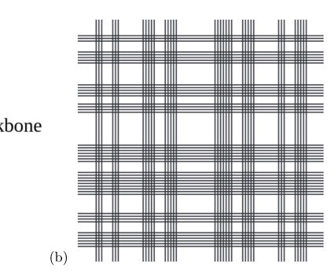
<figcaption class="paper-figure-caption"><b>Fig 1.</b> FIG. 1. Fractal structure development from (a) comb to (b) fractal mesh (Cantor tartan).</figcaption>
</figure>
<figure class="paper-figure-card">
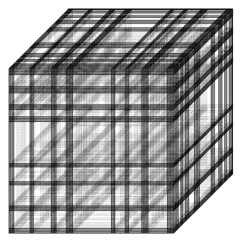
<figcaption class="paper-figure-caption"><b>Fig 2.</b> FIG. 2. A fractal sponge Sα,β,γ = Sα × Sβ × Sγ, which also defines a 3D fractal mesh of the diffusion coefficients matrix Di,j ̸= 0 in eq. (4), if (i, j) = {x, y, z} ∈Sα,β,γ.</figcaption>
</figure>
<figure class="paper-figure-card">
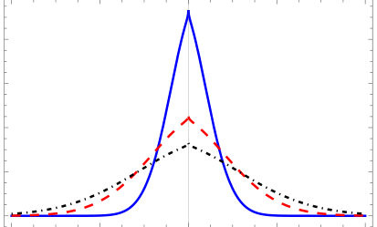
<figcaption class="paper-figure-caption"><b>Fig 3.</b> FIG. 3. PDF (27) for α = β = γ = 0.9 and t = 0.1 (blue solid line), t = 1 (red dashed line) and t = 2 (black dot-dashed line). We set Dx = Dy = Dz = 1.</figcaption>
</figure>
<figure class="paper-figure-card">
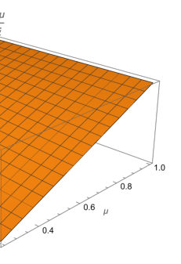
<figcaption class="paper-figure-caption"><b>Fig 4.</b> FIG. 4. Dependence of transport exponent 2µ/¯α on µ and α.</figcaption>
</figure>
<figure class="paper-figure-card">
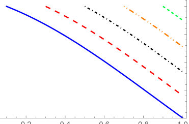
<figcaption class="paper-figure-caption"><b>Fig 5.</b> FIG. 5. Dependence of transport exponent 2µ/¯α on α for df = 2.1 (blue solid line); df = 2.3 (red dashed line); df = 2.5 (black dot-dashed line); df = 2.7 (orange dot-dot-dashed line); df = 2.9 (dotted green line). Here we use df = α + β + γ, with β = γ and Dx = Dy = Dz = 1.</figcaption>
</figure>
</div>

<p><strong>Summary.</strong> This theoretical paper models anomalous diffusion in porous fractal media using a sponge structure derived from Cantor sets. It shows that the resulting diffusion process is described by a generalized Fokker-Planck equation incorporating memory effects and spatial heterogeneity. The analysis relies heavily on advanced mathematical techniques like Laplace transforms and the Fox H-function to determine the scaling behavior of the Mean-Squared Displacement.</p>
<p><strong>Why it may be interesting.</strong> While focused on classical transport, the mathematical machinery—involving fractional derivatives, memory effects, and generalized diffusion equations—is highly relevant to modeling non-Markovian dynamics in open quantum systems or quantum transport through disordered media.</p>
<details>
<summary>Detailed structure</summary>
<p><strong>Main problem.</strong> The paper addresses the challenge of modeling anomalous diffusion and heat transport within complex porous fractal media.</p>
<p><strong>Main result.</strong> The 1D diffusion process in the fractal structure is shown to be governed by a generalized Fokker-Planck equation featuring both a power-law memory kernel and a position-dependent diffusion coefficient.</p>
<p><strong>Method.</strong> The analysis employs the Laplace transformation to solve the governing diffusion equation, leading to asymptotic and series expansions involving the Fox H-function.</p>
<p><strong>Model / system.</strong> The system is modeled as a diffusive process within a fractal sponge structure, mathematically defined as the direct product of Cantor sets ($S = S_\alpha 	imes S_eta 	imes S_\gamma$).</p>
<p><strong>Key observables.</strong> The probability density function (PDF), Mean-Squared Displacement (MSD) ($\langle x^2(t) 
angle$), and the transport exponent are key observables.</p>
<p><strong>Important parameters / regimes.</strong> Fractal dimensions ($\alpha, eta, \gamma$), the memory kernel parameters ($\mu, ar{\alpha}$), and the time scale ($t$).</p>
<p><strong>Assumptions / limitations.</strong> The derivation assumes the test function is well-behaved and involves approximations for the final steps, such as zero boundary conditions at infinity for slow transport.</p>
<p><strong>Figures summary.</strong> Figures illustrate the fractal structure development (comb to fractal mesh), the definition of the sponge structure, and the dependence of the transport exponent and generalized diffusion coefficient on the fractal dimensions.</p>
<p><strong>Paper structure.</strong> The paper develops the problem by defining the fractal model, deriving the 3D diffusion equation, transforming it into Laplace space, solving for the marginal PDF, and finally analyzing the asymptotic behavior of the solution using the Fox H-function.</p>
</details>
<details>
<summary>Abstract</summary>
<p>We suggest a model of a diffusive process inside a fractal sponge structure, which is a generalization of the diffusion processes on a comb and fractal mesh structure. The sponge model is considered as the direct product of Cantor sets. It is shown that the corresponding one-dimensional diffusion process is governed by a generalized Fokker-Planck equation with a power-law memory kernel and a position-dependent diffusion coefficient. That is, the fractal structure of the medium induces memory effects and heterogeneity in the transport system. The considered model may be of interest to describe anomalous heat transport in porous fractal media.</p>
</details>
<p><sub><a href="#top">↑ back to top</a></sub></p>

<p><a id="paper-2609.04668"></a></p>
<h3 id="breakdown-of-the-overdamped-approximation-in-fluctuating-environments"><a href="http://arxiv.org/abs/2609.04668v1">Breakdown of the Overdamped Approximation in Fluctuating Environments</a></h3>
<p><strong>Authors:</strong> Kazuki Fukutani, Takuma Akimoto<br>
<strong>Type:</strong> theory · <strong>Category:</strong> statistical mechanics · <strong>PDF:</strong> <a href="https://arxiv.org/pdf/2609.04668v1">https://arxiv.org/pdf/2609.04668v1</a><br>
<strong>Analysis basis:</strong> full PDF text, analyzed in chunks
<strong>Topic relevance:</strong> <code>Keldysh / 2PI / non-Gaussian methods</code> <strong>2/5</strong> · <code>methods for driven-dissipative</code> <strong>2/5</strong> · <code>Frenkel-Kontorova</code> <strong>1/5</strong> · <code>correlated / nonlocal dissipation</code> <strong>1/5</strong> · <code>driven-dissipative phase transition</code> <strong>1/5</strong> · <code>non-equilibrium universality</code> <strong>1/5</strong> · <code>quantum measurements</code> <strong>1/5</strong></p>
<div class="figure-strip-hint">↔ Scroll figures horizontally</div>
<div class="paper-figures-scroll">
<figure class="paper-figure-card">
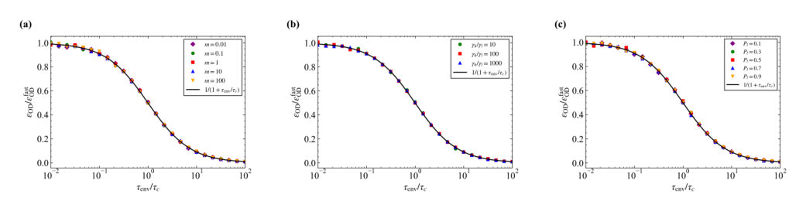
<figcaption class="paper-figure-caption"><b>Fig 1.</b> FIG. 1. Normalized relative error εOD/εfast OD of the overdamped approximation as a function of the normalized environmental relaxation time τenv/τc. (a) Variation with the particle mass m. (b) Variation with the friction ratio γh/γl. (c) Variation with the stationary low-friction-state probability Pl. Solid lines show the theoretical prediction [1 + τenv/τc]−1 from Eq. (62), while symbols show simulation results. In all three cases, the data collapse onto the same crossover function.</figcaption>
</figure>
<figure class="paper-figure-card">
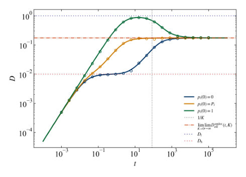
<figcaption class="paper-figure-caption"><b>Fig 2.</b> FIG. 2. Finite-time underdamped effective diffusion coeffi- cient Dunder eff (t, K) in the slow-switching regime for three ini- tial occupation probabilities, pl(0) = 0, Pl, and 1. The pa- rameters are γl = 1, γh = 100, m = kBT = 1, Pl = 1/6, Ph = 5/6, τl = 100, τh = 500, and K = 1.2×10−2. Solid lines show the theoretical results and symbols show simulations. At times shorter than the environmental relaxation time K−1, the curves retain a strong dependence on the initial occu- pation and approach the corresponding frozen-environment behavior predicted by Eq. (74). For t ≳K−1, environmen- tal switching progressively erases the initial-state dependence, and all curves converge toward the...</figcaption>
</figure>
<figure class="paper-figure-card">
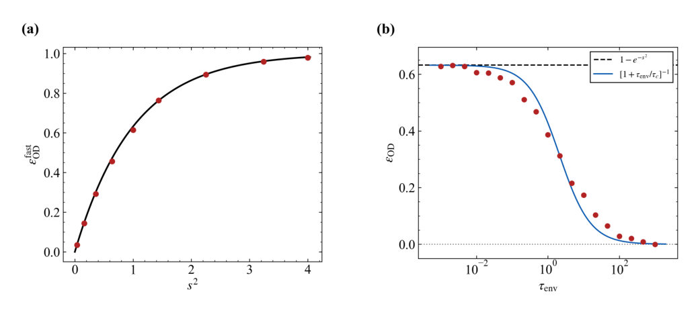
<figcaption class="paper-figure-caption"><b>Fig 3.</b> FIG. 3. (a) Fast-fluctuation relative error εfast OD for the log-Ornstein–Uhlenbeck friction as a function of the variance s2 = Var[ln γ] (µ = 0 and τenv = 10−3). The solid line shows the general fast-fluctuation prediction εfast OD = 1 −e−s2 from Eq. (92), and symbols show numerical simulations. The agreement demonstrates that the persistent overdamped discrepancy is not specific to dichotomous switching. (b) Crossover of the relative error εOD with the environmental timescale τenv for the log-Ornstein– Uhlenbeck friction at fixed s = 1 and µ = 0. As τenv →∞, the velocity has sufficient time to relax within each frictional environment, so that both descriptions reduce to kBT⟨γ−1⟩eq and εOD...</figcaption>
</figure>
</div>

<p><strong>Summary.</strong> This theoretical paper analyzes when the standard overdamped approximation fails for Brownian motion in environments where the friction coefficient fluctuates rapidly. By comparing the long-time diffusion coefficients derived from both underdamped and overdamped descriptions, the authors prove that these two limits yield different results when environmental fluctuations are fast. This establishes a timescale-dependent criterion for the validity of the overdamped limit in heterogeneous media.</p>
<p><strong>Why it may be interesting.</strong> This work provides a rigorous, non-trivial extension to the standard Smoluchowski limit, which is crucial for understanding non-equilibrium dynamics in complex, fluctuating media relevant to biological or soft matter physics.</p>
<details>
<summary>Detailed structure</summary>
<p><strong>Main problem.</strong> The paper investigates the breakdown of the standard overdamped approximation when the friction coefficient governing Brownian motion fluctuates in time due to the environment.</p>
<p><strong>Main result.</strong> The effective diffusion coefficients derived from underdamped and overdamped descriptions differ significantly in the fast-fluctuation limit, demonstrating a non-commutativity between environmental averaging and inertial elimination.</p>
<p><strong>Method.</strong> The authors derive and compare the long-time effective diffusion coefficients by analyzing the underdamped and overdamped Langevin dynamics separately, using state-resolved correlation functions for Markovian friction processes.</p>
<p><strong>Model / system.</strong> The model considers a one-dimensional Brownian particle subject to a time-dependent friction coefficient $\gamma(t)$, which can be modeled as a two-state Markov process or a continuous log-Ornstein-Uhlenbeck process.</p>
<p><strong>Key observables.</strong> Effective diffusion coefficient ($D_{	ext{eff}}$), state-resolved velocity correlations, and the crossover time ($ au_c$).</p>
<p><strong>Important parameters / regimes.</strong> The ratio of environmental switching time to velocity relaxation time ($\Theta$), and the characteristic crossover time ($   au_c$).</p>
<p><strong>Assumptions / limitations.</strong> The fluctuation-dissipation relation is satisfied instantaneously for every realization of the fluctuating friction coefficient $\gamma(t)$.</p>
<p><strong>Figures summary.</strong> Figures illustrate the relative error in the overdamped approximation versus the ratio of environmental relaxation time to the crossover time, showing the crossover behavior.</p>
<p><strong>Paper structure.</strong> The paper first establishes the general comparison between underdamped and overdamped dynamics. It then specializes to the two-state Markov friction, deriving the finite-time crossover exactly. Finally, it extends the analysis to general stationary processes, including the log-Ornstein-Uhlenbeck environment, to determine the crossover time.</p>
</details>
<details>
<summary>Abstract</summary>
<p>The overdamped approximation is widely used to describe Brownian motion in complex environments, but its validity becomes nontrivial when the friction coefficient itself fluctuates in time. We investigate this problem by comparing underdamped and overdamped Langevin dynamics subject to the same fluctuating friction and satisfying the fluctuation--dissipation relation at a common temperature. We show that environmental averaging and inertial elimination generally lead to different long-time transport when environmental fluctuations are fast compared with velocity relaxation. For rapidly fluctuating friction, the underdamped dynamics is governed by the arithmetic mean friction and yields $D_{\rm eff}^{\rm under}=k_{\rm B}T/\langleγ\rangle$, whereas the overdamped dynamics gives $D_{\rm eff}^{\rm over}=k_{\rm B}T\langleγ^{-1}\rangle$. For a two-state Markov friction, we derive the finite-time effective diffusion coefficient exactly and identify the full crossover between these two regimes, controlled by the competition between velocity relaxation and environmental switching. We further establish the fast-fluctuation result for general stationary friction processes and verify it for a continuous log-Ornstein--Uhlenbeck environment, for which the characteristic crossover time can also be determined independently. Our results reveal a noncommutativity between environmental averaging and inertial elimination, establish a timescale-dependent criterion for the validity of overdamped dynamics in temporally heterogeneous environments, and show that rapid environmental fluctuations can enhance, rather than suppress, the consequences of inertia.</p>
</details>
<p><sub><a href="#top">↑ back to top</a></sub></p>

<p><a id="paper-2609.04743"></a></p>
<h3 id="analytical-model-for-polarization-transfer-during-gas-phase-collision-events-in-spin-exchange-optical-pumping-spin-math398math-math399mathxe-versus-spin-math400math-math401mathxe"><a href="http://arxiv.org/abs/2609.04743v1">Analytical model for polarization transfer during gas-phase collision events in spin-exchange optical pumping: Spin-$\frac{1}{2}$ $^{129}$Xe versus spin-$\frac{3}{2}$ $^{131}$Xe</a></h3>
<p><strong>Authors:</strong> Perttu Hilla, Rajgowrav Cheenikundil, Juha Vaara<br>
<strong>Type:</strong> theory · <strong>Category:</strong> other · <strong>PDF:</strong> <a href="https://arxiv.org/pdf/2609.04743v1">https://arxiv.org/pdf/2609.04743v1</a><br>
<strong>Analysis basis:</strong> full PDF text, analyzed in chunks
<strong>Topic relevance:</strong> <code>Keldysh / 2PI / non-Gaussian methods</code> <strong>2/5</strong> · <code>methods for driven-dissipative</code> <strong>2/5</strong> · <code>quantum measurements</code> <strong>2/5</strong> · <code>correlated / nonlocal dissipation</code> <strong>1/5</strong> · <code>driven-dissipative phase transition</code> <strong>1/5</strong></p>
<div class="figure-strip-hint">↔ Scroll figures horizontally</div>
<div class="paper-figures-scroll">
<figure class="paper-figure-card">
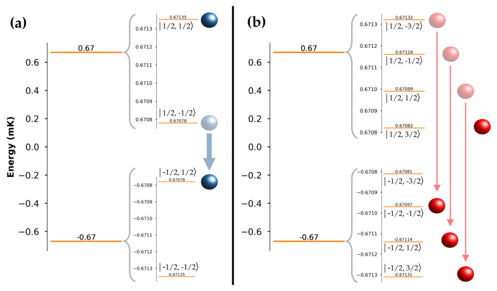
<figcaption class="paper-figure-caption"><b>Fig 1.</b> FIG. 1. Energy level diagrams of the (a) electron-129Xe and (b) electron-131Xe spin systems with the spin states denoted as |mS, mK⟩, using the energy eigenvalues of the spin Hamiltonian including the electron and nuclear Zeeman interactions at a magnetic field of B = 1 mT. The hyperfine-allowed ˆS± ˆK∓flip-flop transitions are shown as arrows between the initial states implied by Eq. (6) (transparent spheres) and the final states (solid spheres). The thickness of the arrows illustrates the relative magnitudes of the HFCs of the two isotopes.</figcaption>
</figure>
<figure class="paper-figure-card">
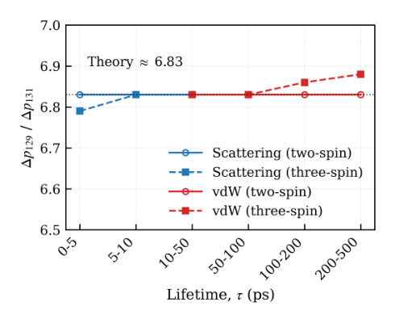
<figcaption class="paper-figure-caption"><b>Fig 2.</b> FIG. 2. Simulated polarization transfer ratios from Table I for scattering and vdW events, in the two- and three-spin models (with and without the 87Rb nuclear spin). The dotted line indicates the theoretical prediction of 6.83.</figcaption>
</figure>
<figure class="paper-figure-card">
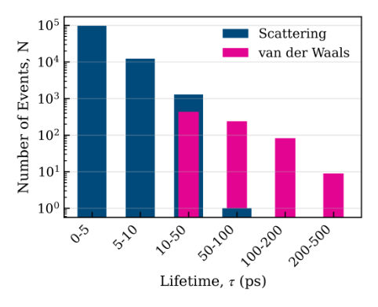
<figcaption class="paper-figure-caption"><b>Fig 3.</b> FIG. 3. Distribution of Rb-Xe collision event lifetimes for the scattering and vdW event categories.</figcaption>
</figure>
</div>

<p><strong>Summary.</strong> This paper develops an analytical model to predict how spin polarization is transferred to noble gas nuclei during gas-phase collisions via Spin-Exchange Optical Pumping. By analyzing the time evolution of the spin density operator, the authors derive a general result applicable to different nuclear spins, predicting a distinct polarization transfer efficiency ratio between $^{129}	ext{Xe}$ and $^{131}	ext{Xe}$. The model is rigorously tested against advanced numerical simulations.</p>
<p><strong>Why it may be interesting.</strong> This work is highly relevant as it tackles the open quantum system dynamics of spin polarization transfer, requiring advanced techniques from quantum optics and open quantum system theory (e.g., master equations, time evolution operators) applied to fundamental atomic/molecular interactions.</p>
<details>
<summary>Detailed structure</summary>
<p><strong>Main problem.</strong> To develop a rigorous theoretical model for the polarization transfer efficiency during gas-phase collision events in Spin-Exchange Optical Pumping (SEOP), specifically comparing spin-1/2 $^{129}	ext{Xe}$ and spin-3/2 $^{131}	ext{Xe}$.</p>
<p><strong>Main result.</strong> The analytical model predicts a polarization transfer ratio of $\Delta p_{129}/\Delta p_{131} \approx 6.83$, suggesting $^{131}	ext{Xe}$ experiences significantly less polarization transfer than $^{129}	ext{Xe}$ under idealized conditions.</p>
<p><strong>Method.</strong> The analysis uses the Baker-Campbell-Hausdorff expansion on the time evolution of the spin density operator, deriving the polarization transfer as a power series in the hyperfine coupling constant and collision time.</p>
<p><strong>Model / system.</strong> The system involves the interaction between optically polarized alkali-metal atoms and noble gas nuclei ($  ext{Xe}$) during gas-phase collisions, governed by the hyperfine coupling Hamiltonian. The model is extended to handle arbitrary nuclear spin $I$ and is validated against detailed numerical multiscale simulations.</p>
<p><strong>Key observables.</strong> Xe nuclear spin polarization level ($p_K(	au)$), and the ratio of polarization transfer ($\Delta p_{129}/\Delta p_{131}$).</p>
<p><strong>Important parameters / regimes.</strong> Hyperfine coupling constants ($A_K$), collision lifetime ($   au$), and the nuclear spin quantum numbers ($I=1/2$ vs $I=3/2$).</p>
<p><strong>Assumptions / limitations.</strong> The model neglects spin relaxation processes and assumes the leading-order quadratic term in the BCH expansion is dominant for short-lived collisions.</p>
<p><strong>Figures summary.</strong> Figure 1 illustrates the energy level diagrams for electron-$^{129}	ext{Xe}$ and electron-$^{131}	ext{Xe}$ spin systems, detailing hyperfine-allowed flip-flop transitions.</p>
<p><strong>Paper structure.</strong> The paper first establishes the general theoretical framework using the Liouville-von Neumann equation and the BCH expansion. It then derives the leading-order quadratic term for polarization transfer, applies this to compare $^{129}	ext{Xe}$ and $^{131}	ext{Xe}$, and finally validates the analytical result by comparing it to complex numerical multiscale simulations.</p>
</details>
<details>
<summary>Abstract</summary>
<p>Spin-exchange optical pumping (SEOP) is a method for producing spin-hyperpolarized noble gas nuclei, such as 129Xe and 131Xe, which are used in various magnetic resonance applications from fundamental physics to quantum sensing and medical imaging. In SEOP, optically polarized alkali-metal atoms transfer their spin polarization to the noble gas nuclei in gas-phase collision events via the hyperfine coupling (HFC) between the alkali valence electron and the noble gas nucleus. While the polarization transfer physics of spin $I = 1/2$ nuclei, such as 129Xe, is relatively well understood, that of spin $I > 1/2$ nuclei, such as 131Xe ($I = 3/2$), has been far less studied, and no rigorous theoretical model has been presented to date. To this end, we derive a simple analytical model for the upper limit, neglecting relaxation, of the SEOP polarization transfer, applicable to noble gases with arbitrary nuclear spin. Analytical evaluation of the Baker-Campbell-Hausdorff expansion for the time evolution of the spin density operator $\hatρ(t)$ reveals that only even-order terms in the HFC contribute to the polarization transfer, with the leading-order quadratic term being the most significant. We obtain a result similar to that derived for the spin-exchange cross section by Herman [Phys. Rev. 137, A 1062 (1965)], but in a more general framework for the time evolution of $\hatρ(t)$ that is also more familiar to magnetic resonance researchers. The model is applied to understand the difference in the polarization transfer efficiency between 129Xe and 131Xe, yielding results in agreement with previous experiments. We also validate the model by comparison to detailed numerical multiscale simulations of the SEOP process, where full quantum-chemically computed spin Hamiltonians sampled from molecular dynamics simulations of the gas-phase collision events are used to propagate the spin dynamics.</p>
</details>
<p><sub><a href="#top">↑ back to top</a></sub></p>

<p><a id="paper-2609.04692"></a></p>
<h3 id="low-dimensional-phase-diagram-of-higher-order-networked-systems"><a href="http://arxiv.org/abs/2609.04692v1">Low-Dimensional Phase Diagram of Higher-Order Networked Systems</a></h3>
<p><strong>Authors:</strong> Jia-Jie Qin, Jack Murdoch Moore, Xiaozhu Zhang, Gang Yan<br>
<strong>Type:</strong> theory · <strong>Category:</strong> statistical mechanics · <strong>PDF:</strong> <a href="https://arxiv.org/pdf/2609.04692v1">https://arxiv.org/pdf/2609.04692v1</a><br>
<strong>Analysis basis:</strong> full PDF text, analyzed in chunks
<strong>Topic relevance:</strong> <code>analog quantum simulation</code> <strong>2/5</strong> · <code>driven-dissipative phase transition</code> <strong>2/5</strong> · <code>non-equilibrium universality</code> <strong>2/5</strong> · <code>Keldysh / 2PI / non-Gaussian methods</code> <strong>1/5</strong> · <code>methods for driven-dissipative</code> <strong>1/5</strong></p>
<div class="figure-strip-hint">↔ Scroll figures horizontally</div>
<div class="paper-figures-scroll">
<figure class="paper-figure-card">
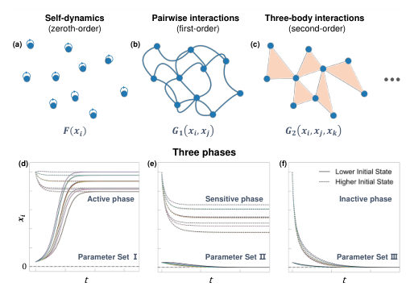
<figcaption class="paper-figure-caption"><b>Fig 1.</b> FIG. 1. Higher-order networks and three dynamical phases. (a–c) Interaction orders representing self-dynamics (zeroth order), pairwise (first order) and three-body (second order) couplings. (d–f) Under three representative parameter sets, the system evolves to distinct steady states depending on initial conditions, illustrating active, sensitive, and inactive phases.</figcaption>
</figure>
<figure class="paper-figure-card">
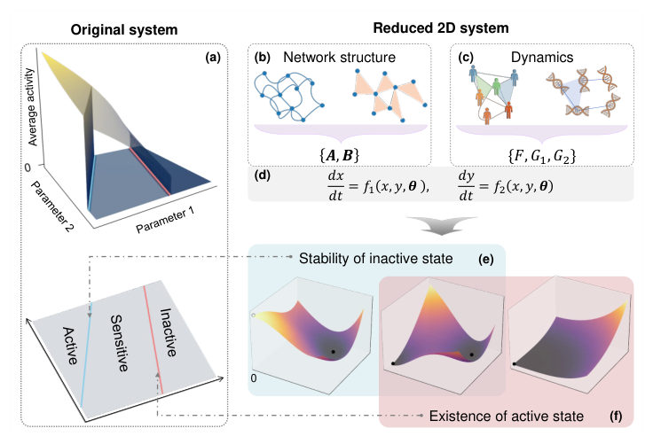
<figcaption class="paper-figure-caption"><b>Fig 2.</b> FIG. 2. Dimension reduction framework for higher-order networked systems. Starting from a higher-order network (b) and the associated dynamical process (c), our framework reduces the networked dynamics to an effective two-dimensional system (d). This reduction allows to analyze the stability of inactive state (e) and the existence of active state (f), determing the boundaries among active, sensitive, and inactive phases thereby yielding the full phase diagram (a).</figcaption>
</figure>
<figure class="paper-figure-card">
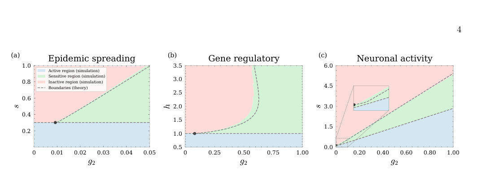
<figcaption class="paper-figure-caption"><b>Fig 3.</b> FIG. 3. Phase diagrams for three representative dynamics on higher-order networks. The inactive (red), sensitive (green), and active (blue) regions obtained from numerical simulations for (a) epidemic spreading dynamics on a high-school contact network (N = 180 nodes, L1 = 2, 220 edges, L2 = 3, 000 triangles) [41] with g1 = 0.01; (b) gene-regulatory dynamics on the yeast protein–protein interaction network (N = 1, 647 nodes, L1 = 5, 036 edges, L2 = 212 triangles) [42] with a = 1, g1 = 0.5, s = 7; (c) neuronal dynamics on a brain white-matter connectivity network (N = 906 nodes, L1 = 2, 225 edges, L2 = 1, 273 triangles) [43] with δ = 1, ζ = 2, g1 = 0.1. Dashed lines represent the theoretical...</figcaption>
</figure>
<figure class="paper-figure-card">
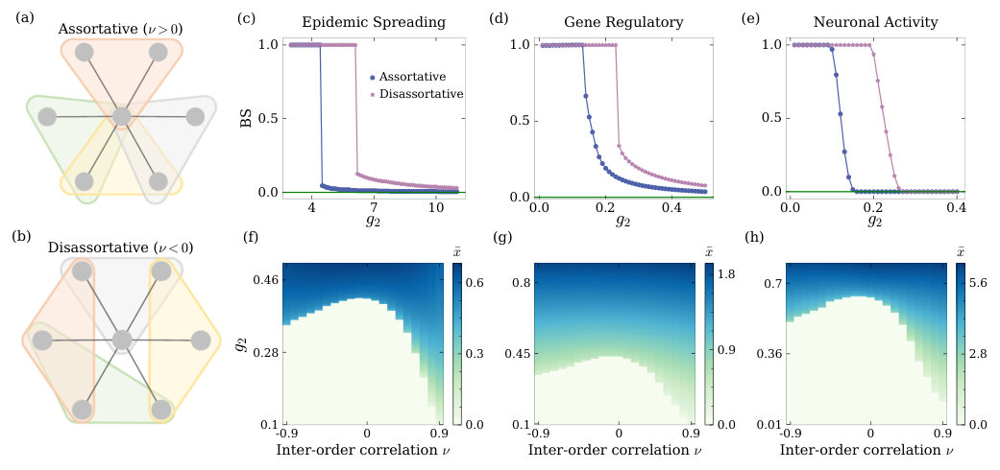
<figcaption class="paper-figure-caption"><b>Fig 4.</b> FIG. 4. Effect of inter-order mixing on system resilience. (a,b) Schematic illustration of assortative (ν &gt; 0) and disassortative (ν &lt; 0) mixing between pairwise and higher-order interactions. (c–e) Basin stability of the inactive state as a function of higher-order interaction strength g2 for both mixing types. (f–h) Average steady-state activity ¯x = P</figcaption>
</figure>
</div>

<p><strong>Summary.</strong> This work introduces a powerful analytical framework to study complex dynamical systems on higher-order networks, which go beyond simple pairwise interactions. By reducing the high-dimensional dynamics to a low-dimensional flow, the authors map out the system's phase diagram and show that network organization profoundly controls system resilience against tipping points.</p>
<p><strong>Why it may be interesting.</strong> While focused on classical network dynamics, the methodology of dimensionality reduction and analyzing critical transitions in complex, interacting systems shares conceptual overlap with understanding collective behavior in quantum many-body systems, particularly in identifying effective low-energy subspaces.</p>
<details>
<summary>Detailed structure</summary>
<p><strong>Main problem.</strong> The paper addresses the challenge of analyzing rich critical phenomena and predicting phase transitions in higher-order networked systems, which cannot be accurately modeled using traditional pairwise interaction approaches.</p>
<p><strong>Main result.</strong> The authors developed a dimension-reduction framework that maps the high-dimensional dynamics onto an effective low-dimensional system, revealing that system resilience depends critically on the alignment between pairwise and higher-order connectivity.</p>
<p><strong>Method.</strong> A dimension-reduction framework is developed to project the high-dimensional dynamics onto a low-dimensional flow (often 2D) by identifying effective mean fields associated with different interaction orders.</p>
<p><strong>Model / system.</strong> The model is a general dynamical system defined on higher-order networks, incorporating self-dynamics, pairwise interactions ($A_{ij}$), and three-body interactions ($B_{ijk}$), governed by coupled differential equations.</p>
<p><strong>Key observables.</strong> Phase diagram (Active, Sensitive, Inactive regions), Basin Stability (BS) of the inactive state, and the average steady-state activity ($ar{x}$).</p>
<p><strong>Important parameters / regimes.</strong> Interaction strengths ($g_1, g_2$) and the inter-order correlation exponent ($
u$), which characterizes network organization (assortative vs. disassortative mixing).</p>
<p><strong>Assumptions / limitations.</strong> The analysis relies on dimension reduction using dominant eigenvectors and assumes weak parameter heterogeneity when deriving effective descriptions.</p>
<p><strong>Figures summary.</strong> Figures illustrate the emergence of distinct dynamical phases (active, sensitive, inactive) across different interaction orders and show how system resilience (BS) changes based on the inter-order mixing parameter ($
u$).</p>
<p><strong>Paper structure.</strong> The paper introduces the high-order dynamics, develops the dimension-reduction framework using structural descriptors, analyzes the resulting low-dimensional flow to map the phase diagram, and finally investigates how network organization ($
u$) modulates system resilience (BS).</p>
</details>
<details>
<summary>Abstract</summary>
<p>Higher-order networks exhibit rich critical phenomena that cannot be captured by traditional pairwise models. Here, we develop an analytical dimension-reduction framework that maps higher-order networked dynamics onto an effective low-dimensional system, allowing accurate prediction of tipping boundaries, bistability regions, and the nature of phase transitions. We demonstrate the power of this framework across a range of dynamical processes, revealing distinct effects of higher-order interactions on transition continuity and hysteresis. Furthermore, we find that system resilience exhibits a profound dependence on the alignment between pairwise and higher-order connectivity, with assortative mixing enhancing tipping toward active states. Our findings establish a general theory for understanding the critical transitions in higher-order networks, offering new insights for anticipating and managing systemic risk in complex systems.</p>
</details>
<p><sub><a href="#top">↑ back to top</a></sub></p>

<p><a id="paper-2609.04717"></a></p>
<h3 id="mean-field-theory-for-quantum-spin-chains"><a href="http://arxiv.org/abs/2609.04717v1">Mean-field theory for quantum spin chains</a></h3>
<p><strong>Authors:</strong> Mylène Martirosyan, Astrid Monin-Baroille, Leïla Moueddene, Mohammed M. Shabat, Bertrand Berche<br>
<strong>Type:</strong> theory · <strong>Category:</strong> statistical mechanics · <strong>PDF:</strong> <a href="https://arxiv.org/pdf/2609.04717v1">https://arxiv.org/pdf/2609.04717v1</a><br>
<strong>Analysis basis:</strong> full PDF text, analyzed in chunks
<strong>Topic relevance:</strong> <code>Keldysh / 2PI / non-Gaussian methods</code> <strong>2/5</strong> · <code>analog quantum simulation</code> <strong>2/5</strong> · <code>Frenkel-Kontorova</code> <strong>1/5</strong> · <code>driven-dissipative phase transition</code> <strong>1/5</strong> · <code>methods for driven-dissipative</code> <strong>1/5</strong> · <code>non-equilibrium universality</code> <strong>1/5</strong></p>
<div class="figure-strip-hint">↔ Scroll figures horizontally</div>
<div class="paper-figures-scroll">
<figure class="paper-figure-card">
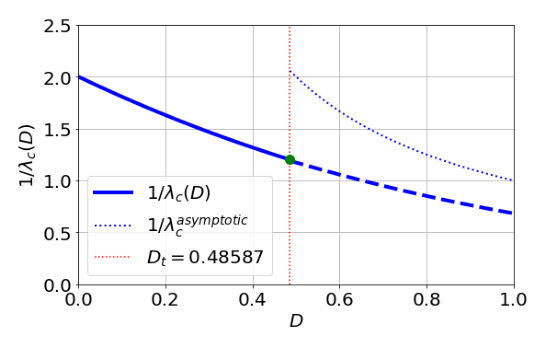
<figcaption class="paper-figure-caption"><b>Fig 1.</b> Figure 1. Phase diagram of the BC model. The vertical dotted line (red online) marks the tricritical value Dtri. The continuous line (blue online) at lower values of D is the second order regime while the dashed line (blue online) at larger values is the first order transition. The dotted line above the tricritical point is the asymptotic D ≫1 first-order transition coupling.</figcaption>
</figure>
<figure class="paper-figure-card">
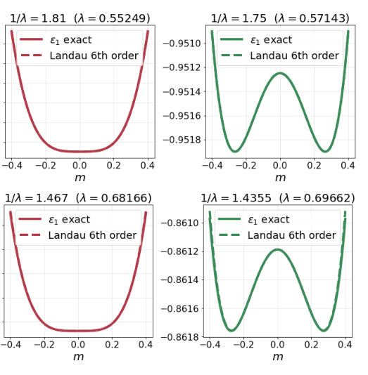
<figcaption class="paper-figure-caption"><b>Fig 2.</b> Figure 2. Landau expansion of the free energy crossing the Ising universality class transition at D = 0.1, 0.3. At the transition coupling, the free energy is flat.</figcaption>
</figure>
<figure class="paper-figure-card">
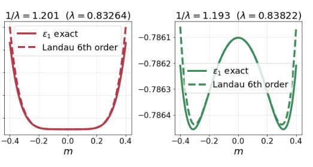
<figcaption class="paper-figure-caption"><b>Fig 3.</b> Figure 3. Landau expansion of the free energy crossing the tricritical universality class transition at D = 0.486. The plateau of the free energy at the transition is wider.</figcaption>
</figure>
<figure class="paper-figure-card">
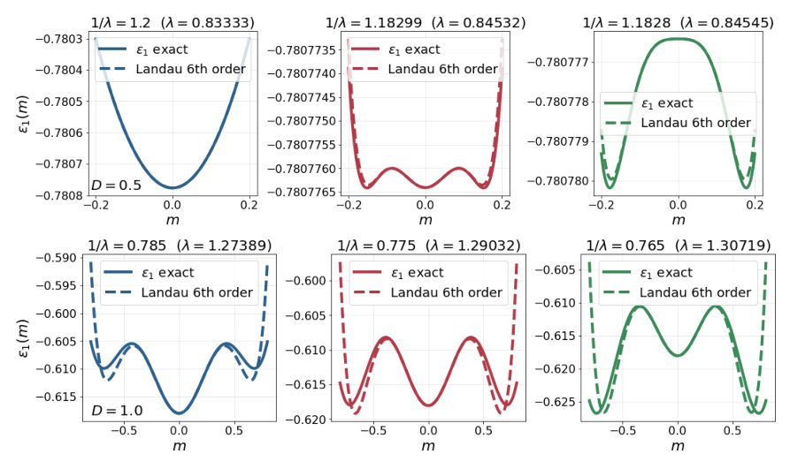
<figcaption class="paper-figure-caption"><b>Fig 4.</b> Figure 4. Landau expansion of the free energy crossing the first-order transition at D = 0.5, 1.0. Note the difference of scales on the horizontal axis. At the transition, the discontinuity of the order parameter becomes more pronounced when we go deeper in the first-order regime (increasing D).</figcaption>
</figure>
<figure class="paper-figure-card">
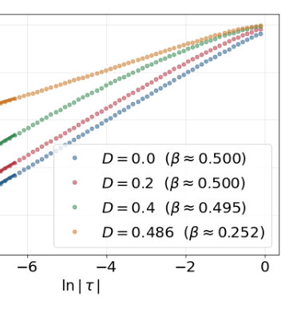
<figcaption class="paper-figure-caption"><b>Fig 5.</b> Figure 5. Log-log plot of the magnetisation vs τ and determination of the critical exponents βMFT along the critical line and βtri at the tricritical point. The fit of the data is performed on the left part of the plot (full lines).</figcaption>
</figure>
</div>

<p><strong>Summary.</strong> This pedagogical paper reviews the application of mean-field theory to quantum phase transitions, using the Ising and Blume-Capel spin chain models as primary examples. It details how mean-field approximations simplify the complex quantum Hamiltonians, allowing for the calculation of critical points and phase diagrams. The work is valuable for understanding the theoretical limits and pedagogical utility of mean-field methods in quantum many-body systems.</p>
<p><strong>Why it may be interesting.</strong> While focused on classical statistical mechanics techniques, the application to quantum spin chains provides a powerful, albeit approximate, tool for understanding quantum critical points, which is foundational knowledge for many-body quantum physics.</p>
<details>
<summary>Detailed structure</summary>
<p><strong>Main problem.</strong> The paper aims to clarify and explore the application of mean-field theory to the less common domain of quantum phase transitions, contrasting it with its established use in classical systems.</p>
<p><strong>Main result.</strong> The mean-field approach successfully provides solvable, simplified Hamiltonians for models like the Ising and Blume-Capel chains, yielding critical exponents and phase boundaries that can be compared to exact results.</p>
<p><strong>Method.</strong> The core method involves applying the mean-field approximation by decoupling spin-spin correlations and neglecting fluctuation terms, often combined with a variational or Landau free energy expansion.</p>
<p><strong>Model / system.</strong> The study focuses on quantum spin chains, specifically analyzing the Ising model (in a transverse field) and the Blume-Capel (BC) model. The analysis is performed at zero temperature, driving quantum phase transitions.</p>
<p><strong>Key observables.</strong> Order parameter (m = <sigma_x>), critical coupling constants (e.g., $\lambda_c = 1/2$ for Ising), and critical exponents ($eta_{MFT} = 1/2$).</p>
<p><strong>Important parameters / regimes.</strong> Coupling constants ($\lambda$), crystal field ($D$), and the anisotropy limits ($K_s 	o 0, K_t 	o \infty$).</p>
<p><strong>Assumptions / limitations.</strong> The primary assumption is the mean-field approximation, which neglects quantum fluctuations ($\mathcal{O}(\delta\sigma_x\delta\sigma_x)$). The analysis is performed at zero temperature ($T=0$).</p>
<p><strong>Figures summary.</strong> Figures illustrate the phase diagram of the BC model, showing second-order lines, a tricritical point, and first-order transition lines. Other figures show the Landau expansion of the free energy at different parameter values.</p>
<p><strong>Paper structure.</strong> The paper introduces the general framework of mean-field theory, applies it to the 2D Ising model via transfer matrices, and then develops the analysis for the more complex Blume-Capel model, using the free energy expansion to map out the phase diagram.</p>
</details>
<details>
<summary>Abstract</summary>
<p>Mean-field theory is a widely used approximation for describing phase transitions, particularly effective above the upper critical dimension. Its origins can be traced back to the van der Waals theory of the liquid-gas transition and Weiss's molecular field theory of the paramagnetic-ferromagnetic transition. However, it was Lev D. Landau who provided a unifying and general framework applicable to a broad class of physical systems. The mean-field approach typically involves neglecting thermal fluctuations, which is a reasonable assumption in many classical contexts. However, its application to quantum phase transitions at zero temperature is less common. The aim of this short pedagogical paper is to explore and clarify the use of the mean-field approach in the less familiar domain of quantum phase transitions. We specifically consider the Ising model and the Blume-Capel model.</p>
</details>
<p><sub><a href="#top">↑ back to top</a></sub></p>

<p><a id="paper-2609.05373"></a></p>
<h3 id="molecular-interfacial-rheology-lipid-membrane-shear-viscosity"><a href="http://arxiv.org/abs/2609.05373v1">Molecular interfacial rheology: Lipid membrane shear viscosity</a></h3>
<p><strong>Authors:</strong> Zhi-Xun Xu, Amaresh Sahu<br>
<strong>Type:</strong> both · <strong>Category:</strong> statistical mechanics · <strong>PDF:</strong> <a href="https://arxiv.org/pdf/2609.05373v1">https://arxiv.org/pdf/2609.05373v1</a><br>
<strong>Analysis basis:</strong> full PDF text, analyzed in chunks
<strong>Topic relevance:</strong> <code>Keldysh / 2PI / non-Gaussian methods</code> <strong>2/5</strong> · <code>methods for driven-dissipative</code> <strong>2/5</strong> · <code>Frenkel-Kontorova</code> <strong>1/5</strong> · <code>analog quantum simulation</code> <strong>1/5</strong> · <code>non-equilibrium universality</code> <strong>1/5</strong> · <code>quantum measurements</code> <strong>1/5</strong></p>
<div class="figure-strip-hint">↔ Scroll figures horizontally</div>
<div class="paper-figures-scroll">
<figure class="paper-figure-card">
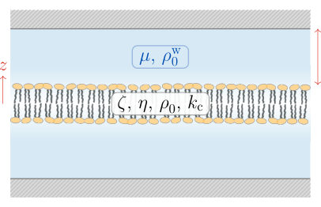
<figcaption class="paper-figure-caption"><b>Fig 1.</b> Figure 1: Schematic of the membrane–water system, sur- rounded by solid walls, in md simulations. Membrane and water parameters are described in the text. The bilayer is centered on the x–y plane, and ℓz is the water thickness above and below the membrane. Periodic boundary conditions are used in the in-plane directions.</figcaption>
</figure>
<figure class="paper-figure-card">
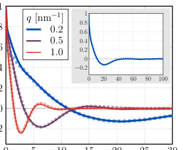
<figcaption class="paper-figure-caption"><b>Fig 2.</b> Figure 2: Normalized tvacfs from md simulations of a dopc bilayer in the fluid phase, at 25◦C. The lateral size of the simulation cell is ℓx = ℓy ≈62.5 nm, for which q ≥2π/ℓx ≈ 0.1 nm−1. The md data (thin solid lines) are observed to be well-approximated by [Aq cos(γqt) + Bq sin(γqt)] exp{−αqt}, as shown by the thick, transparent dashed lines. (inset) Data for q ≈0.2 nm−1 are shown over a longer time window.</figcaption>
</figure>
<figure class="paper-figure-card">

<figcaption class="paper-figure-caption"><b>Fig 3.</b> Figure 3: Oscillation frequency γq fit extracted from tvacfs as a function of wavevector magnitude. The observed q3/2</figcaption>
</figure>
<figure class="paper-figure-card">

<figcaption class="paper-figure-caption"><b>Fig 4.</b> Figure 4: Running integral Iq(t) of the normalized tvacfs shown in Fig. 2 (solid lines). The slow decrease at long times is not captured by the damped sinusoidal fits of C q(t), whose running integrals are shown as dashed lines. (inset) A com- mon structure across wavelengths is revealed when Iq and t are scaled with the characteristic frequency ¯γq.</figcaption>
</figure>
<figure class="paper-figure-card">

<figcaption class="paper-figure-caption"><b>Fig 5.</b> Figure 5: Protocol to determine the shear viscosity of a dopc bilayer in the fluid phase at 25◦C. (a) The Einstein–Helfand method is used to calculate Iq ∞from md simulations. It is convenient to plot 1/Iq ∞, which equals the decay rate ξq. The contribution to ξq from the surrounding water, ξq w := (2µq/ρ0) tanh(ℓzq), is negligible over the wavenumbers considered—as shown by the solid cyan line [50]. Consequently, ξq ≈q2ζ(q)/ρ0 and 1/Iq ∞roughly scales as q2 (dashed red line). (b) The generalized membrane shear viscosity is determined from md data according to Eq. (7), as shown by the blue circles. Results are fit to ζ(q) = ζ(1 −bq2), as shown by the red line; the thick bands depict one...</figcaption>
</figure>
</div>

<p><strong>Summary.</strong> This work establishes 'molecular interfacial rheology,' a computational method to determine the shear viscosity of lipid membranes from molecular dynamics simulations. By analyzing the transverse velocity autocorrelation function using the Mori-Zwanzig formalism, the authors successfully extracted quantitative viscosity values for model bilayers. This provides a rigorous link between microscopic molecular dynamics and macroscopic continuum rheological properties.</p>
<p><strong>Why it may be interesting.</strong> While focused on soft matter rheology, the use of the Mori-Zwanzig formalism to analyze time correlation functions and extract transport coefficients from microscopic dynamics is a powerful technique applicable to open quantum systems and many-body dynamics.</p>
<details>
<summary>Detailed structure</summary>
<p><strong>Main problem.</strong> The paper develops a method to accurately extract the shear viscosity of lipid membranes from equilibrium molecular dynamics simulations, termed 'molecular interfacial rheology.'</p>
<p><strong>Main result.</strong> The authors successfully calculated wavevector-dependent shear viscosities for fluid-phase bilayers, finding values for DOPC and DPPC that agree with theoretical expectations and non-equilibrium simulations.</p>
<p><strong>Method.</strong> The method utilizes the Mori-Zwanzig formalism applied to the transverse velocity autocorrelation function (tvacf) derived from MD simulations to extract the memory kernel and subsequently the viscosity.</p>
<p><strong>Model / system.</strong> The system modeled is a lipid bilayer (e.g., DOPC, DPPC) confined in water and simulated using molecular dynamics. The rheology is characterized by analyzing the time evolution of the membrane's transverse velocity.</p>
<p><strong>Key observables.</strong> Transverse velocity autocorrelation function (tvacf), wavevector-dependent shear viscosity ($\zeta(q)$), and the memory kernel $K_q(t)$.</p>
<p><strong>Important parameters / regimes.</strong> Shear viscosities ($\zeta$) ranging from 0.064 to 0.18 pN*us/nm; wavevector ($q$); and the coupling between membrane and water viscosities.</p>
<p><strong>Assumptions / limitations.</strong> The analysis relies on reconciling the observed damped oscillations in the tvacf with the predictions of continuum hydrodynamics using the Mori-Zwanzig formalism.</p>
<p><strong>Figures summary.</strong> Figures illustrate the decay of the tvacf, the scaling of the oscillation frequency ($\gamma_q \sim q^{3/2}$), and the resulting dependence of the generalized shear viscosity $\zeta(q)$ on the wavevector $q$.</p>
<p><strong>Paper structure.</strong> The paper introduces the concept of molecular interfacial rheology, details the theoretical framework using the Mori-Zwanzig formalism to analyze the tvacf, presents the extraction methodology, and validates the results using both equilibrium and non-equilibrium simulations.</p>
</details>
<details>
<summary>Abstract</summary>
<p>We develop a method to extract the shear viscosity of a lipid membrane from equilibrium molecular dynamics simulations. The method characterizes the rheology of general interfacial systems embedded in three-dimensional media; we term it molecular interfacial rheology. In our simulations the planar bilayer and surrounding water are confined between solid, parallel walls. Following Onsager's regression hypothesis, membrane and water fluctuations are assumed to relax according to the coupled continuum-mechanical equations governing the confined system---which predict that the membrane transverse velocity autocorrelation function (TVACF) decays exponentially, at a rate set by the membrane and water viscosities. The measured TVACF, however, exhibits damped oscillations followed by a slowly decaying tail. We reconcile these behaviors using the Mori--Zwanzig formalism, and extract the wavevector-dependent membrane viscosity from the time-integral of the TVACF. Results from theory and simulations agree over a decade of wavevectors, and extrapolating to long wavelengths yields shear viscosities ranging from 0.064 to 0.18 pN*us/nm across two representative single-component, fluid-phase bilayers. Our results are corroborated by nonequilibrium simulations where a spatially varying in-plane body force is applied to lipid molecules, thus validating the framework of molecular interfacial rheology.</p>
</details>
<p><sub><a href="#top">↑ back to top</a></sub></p>

<p><a id="paper-2609.04732"></a></p>
<h3 id="thermodynamic-learning"><a href="http://arxiv.org/abs/2609.04732v1">Thermodynamic learning</a></h3>
<p><strong>Authors:</strong> F. Corberi, S. dello Russo, G. Messuti, S. Scarpetta, L. Smaldone<br>
<strong>Type:</strong> theory · <strong>Category:</strong> disordered systems and neural networks · <strong>PDF:</strong> <a href="https://arxiv.org/pdf/2609.04732v1">https://arxiv.org/pdf/2609.04732v1</a><br>
<strong>Analysis basis:</strong> full PDF text, analyzed in chunks
<strong>Topic relevance:</strong> <code>analog quantum simulation</code> <strong>2/5</strong> · <code>Keldysh / 2PI / non-Gaussian methods</code> <strong>1/5</strong> · <code>driven-dissipative phase transition</code> <strong>1/5</strong> · <code>methods for driven-dissipative</code> <strong>1/5</strong> · <code>non-equilibrium universality</code> <strong>1/5</strong></p>
<div class="figure-strip-hint">↔ Scroll figures horizontally</div>
<div class="paper-figures-scroll">
<figure class="paper-figure-card">

<figcaption class="paper-figure-caption"><b>Fig 1.</b> FIG. 1. Schematic drawing of a thermodynamic learning sys- tem.</figcaption>
</figure>
<figure class="paper-figure-card">

<figcaption class="paper-figure-caption"><b>Fig 2.</b> FIG. 2. The all-to-all network considered (for Nin = 4, Nhid = 3, Nout = 4).</figcaption>
</figure>
<figure class="paper-figure-card">

<figcaption class="paper-figure-caption"><b>Fig 3.</b> FIG. 3. Memorization (top) and generalization (bottom) properties of the system. In upper panel f ≡1 is plotted as a dotted line, and symbols refer to the fidelity values ⟨Kαα⟩, in lower panel ef is only plotted. In both panels different colors refer to networks with different Nin (Nin = 2, 4, 8, 16) cor- responding to, black, red, green, blue, respectively. Given a color, different symbols refer to the value of Nhid (Nhid = 1, 2, 3, 4 corresponding to circle, square, diamond, star, re- spectively). Same colors/symbols are used in the lower part of the figure for µ = 1/4. For µ = 1/8 and Nin = 8 we use the dark green.</figcaption>
</figure>
</div>

<p><strong>Summary.</strong> This paper proposes 'thermodynamic learning,' a paradigm where machine learning tasks are achieved by training a physical spin system governed solely by statistical mechanics. By treating input/output data as external fields, the system's equilibrium state naturally encodes learned patterns. The results show that this physical approach successfully achieves memorization and generalization, offering a compelling physical model for artificial intelligence.</p>
<p><strong>Why it may be interesting.</strong> This work provides a physical, energy-based framework for machine learning, connecting concepts from statistical mechanics (like free energy minimization) directly to computational tasks, which is highly relevant for understanding physical implementations of computation.</p>
<details>
<summary>Detailed structure</summary>
<p><strong>Main problem.</strong> To investigate if a thermodynamic system, governed purely by statistical mechanics, can perform learning tasks like memorization and generalization without explicit algorithmic rules.</p>
<p><strong>Main result.</strong> The model demonstrates excellent memorization fidelity and good generalization capacity, with performance improving as the system size increases.</p>
<p><strong>Method.</strong> The learning process is analyzed by calculating effective free energies and deriving the probability distribution of coupling configurations based on the system's equilibrium state.</p>
<p><strong>Model / system.</strong> The system is a prototypical Ising model with annealed dichotomous couplings, whose dynamics are governed by a full Hamiltonian incorporating interaction, input, and output fields.</p>
<p><strong>Key observables.</strong> Memorization fidelity ($K_{\alpha\alpha}$) and generalization capacity ($e_f$), which are calculated as averages over the system's equilibrium probability distribution.</p>
<p><strong>Important parameters / regimes.</strong> The analysis relies on taking specific limits on the inverse temperatures ($eta_j, eta_\sigma, eta_S$), particularly the limit where external fields are quenched ($eta_S 	o 0$).</p>
<p><strong>Assumptions / limitations.</strong> The primary assumption is that the system's behavior can be analyzed by separating timescales and calculating effective free energies, treating the training process as reaching a thermodynamic potential minimum.</p>
<p><strong>Figures summary.</strong> Figure 1 schematically illustrates the thermodynamic learning setup involving fast and slow variables and input/output clampings. Figure 2 likely shows quantitative results regarding memorization and generalization performance.</p>
<p><strong>Paper structure.</strong> The paper introduces the thermodynamic learning paradigm, details the Ising model Hamiltonian and the role of external fields as data, develops the analytical framework using effective free energies, and finally presents results showing successful learning capabilities.</p>
</details>
<details>
<summary>Abstract</summary>
<p>We discuss the possibility to train a thermodynamic system, whose micro-variables are fully determined through the Hamiltonian by the usual statistical mechanical rules, to perform tasks such as memorization and generalization. Training is achieved by the application of suitable external fields, playing the role of {\it data}. At variance with conventional machine learning, no other logical or algorithmic rules are introduced. The system is amenable, in principle, to exact analytical calculations. We specialize this general approach to a prototypical Ising system with annealed dichotomous couplings and study its learning ability. Results indicate excellent memorization and good generalization capacity already for small systems, and a tendency to improve with system size.</p>
</details>
<p><sub><a href="#top">↑ back to top</a></sub></p>

<p><a id="paper-2609.04506"></a></p>
<h3 id="state-based-quantum-operations-chameleon-gates"><a href="http://arxiv.org/abs/2609.04506v1">State-Based Quantum Operations: Chameleon Gates</a></h3>
<p><strong>Authors:</strong> S. Alipour, A. T. Rezakhani<br>
<strong>Type:</strong> theory · <strong>Category:</strong> quantum information and computing · <strong>PDF:</strong> <a href="https://arxiv.org/pdf/2609.04506v1">https://arxiv.org/pdf/2609.04506v1</a><br>
<strong>Analysis basis:</strong> full PDF text, analyzed in chunks
<strong>Topic relevance:</strong> <code>analog quantum simulation</code> <strong>2/5</strong> · <code>quantum measurements</code> <strong>1/5</strong></p>
<div class="figure-strip-hint">↔ Scroll figures horizontally</div>
<div class="paper-figures-scroll">
<figure class="paper-figure-card">

<figcaption class="paper-figure-caption"><b>Fig 1.</b> FIG. 1. Comparing conventional parameter-dependent quantum gates controlled-𝑈(𝜙) with operator-dependent quantum controlled-gates C𝜌. Both gates are controlled by some knobs; while the knob in the left one is classical (a parameter 𝜙), the knob in the right one is quantum (an operator, a quantum state/signal 𝜌). Both controlled gates have standard elements such as control and target systems, which here are represented by 𝜓𝛿and 𝜎. For the specific definitions of 𝜓𝛿and C𝜌 see the main text.</figcaption>
</figure>
<figure class="paper-figure-card">

<figcaption class="paper-figure-caption"><b>Fig 2.</b> FIG. 2. [Left] Quantum-circuit schematic of a state-based controlled- gate C𝜌, which we refer to as the chameleon gate [Eq. (6)]. [Right] An equivalent standard gate-based construction is also shown for this gate, which uses a specific combination of quantum states, quantum controlled-swap gate, and partial tracing. Note that basically the control qubit can be any state. But when the control qubit is chosen as 𝜓𝛿with |𝛿| ≪1, this also yields an implementation for U𝜌[Eq. (1)] to an 𝑂(𝛿2) error.</figcaption>
</figure>
<figure class="paper-figure-card">

<figcaption class="paper-figure-caption"><b>Fig 3.</b> FIG. 3. SBQC circuit for simulating the dynamics generated by 𝐻= ℎ𝜌on the simulator state, i.e., 𝑒𝛿𝜌𝜎𝑒𝛿∗𝜌.</figcaption>
</figure>
<figure class="paper-figure-card">

<figcaption class="paper-figure-caption"><b>Fig 4.</b> FIG. 4. State-based quantum circuit for simulation of the dynamics generated by the nonlinear Hamiltonian (13). For the relation between the parameters 𝛿and Δ see the main text.</figcaption>
</figure>
<figure class="paper-figure-card">

<figcaption class="paper-figure-caption"><b>Fig 5.</b> Figure 3 shows the corresponding SBQC circuit.</figcaption>
</figure>
</div>

<p><strong>Summary.</strong> This paper introduces 'chameleon gates,' a novel generalization of controlled-gates where the operation performed is determined by an input quantum state, called the 'quantum knob.' This capability allows for the simulation of nonlinear quantum dynamics, moving beyond fixed unitary evolution. The authors demonstrate this by realizing these gates using standard components and applying them within the State-Based Quantum Computation framework.</p>
<p><strong>Why it may be interesting.</strong> The concept of a state-dependent gate is crucial for modeling complex physical systems where the evolution operator itself depends on the system's current state, which is a major challenge in quantum simulation.</p>
<details>
<summary>Detailed structure</summary>
<p><strong>Main problem.</strong> The paper addresses the need to generalize conventional quantum controlled-gates to implement operations whose form depends dynamically on an input quantum state.</p>
<p><strong>Main result.</strong> Chameleon gates provide a mechanism for state-dependent quantum operations, enabling the simulation of nonlinear quantum dynamics using existing gate-based components.</p>
<p><strong>Method.</strong> The authors generalize controlled-gates by introducing a quantum signal, the 'quantum knob' ($
ho$), which determines the gate's action, and they realize this gate using standard controlled-swap gates.</p>
<p><strong>Model / system.</strong> The model is quantum computation, specifically extending controlled-gates to 'chameleon gates' ($C_
ho$) within the State-Based Quantum Computation (SBQC) framework. This allows for simulating state-dependent (nonlinear) quantum evolutions.</p>
<p><strong>Key observables.</strong> The effective action of the gate, $C_
ho$, and the ability to simulate nonlinear quantum dynamics.</p>
<p><strong>Important parameters / regimes.</strong> The quantum knob state ($
ho$), the time step ($\Delta$), and the approximation parameter ($\delta$).</p>
<p><strong>Assumptions / limitations.</strong> The realization of the gate is accurate up to $O(\delta^2)$, and the simulation of state-dependent dynamics relies on Trotter-Suzuki approximations.</p>
<p><strong>Figures summary.</strong> Figures illustrate the comparison between conventional and chameleon gates, the quantum circuit schematic for the chameleon gate realization, and the SBQC circuits used for simulating both state-independent and state-dependent (nonlinear) Hamiltonians.</p>
<p><strong>Paper structure.</strong> The paper first introduces chameleon gates as a generalization of controlled-gates, detailing their action and physical realization. It then applies this building block within the SBQC framework to demonstrate the simulation of state-dependent (nonlinear) quantum evolutions using Trotter-Suzuki expansion.</p>
</details>
<details>
<summary>Abstract</summary>
<p>We introduce chameleon gates as a natural generalization of conventional quantum controlled-gates. Chameleon gates are state-based quantum controlled-operations that retain standard elements such as control and target systems, while introducing a new feature: the quantum knob. This knob is a quantum signal (state) that determines the operation performed by the gate. Consequently, the action and form of a chameleon gate depend dynamically on the quantum knob, allowing the gate to adapt its operation and implement transformations that are not necessarily unitary. This shapeshifting property is in stark contrast to conventional quantum controlled-gates, whose actions are fixed and cannot be modified. We also propose how chameleon gates can be realized using conventional quantum gates available in current quantum technologies. We then employ chameleon gates as a useful building block within the recently proposed state-based quantum computation (SBQC) framework. Using this approach, we demonstrate the simulation of state-dependent (nonlinear) quantum evolutions.</p>
</details>
<p><sub><a href="#top">↑ back to top</a></sub></p>

<p><a id="paper-2609.05222"></a></p>
<h3 id="a-double-resonator-coupler-for-high-fidelity-two-qubit-gates-between-superconducting-qubits"><a href="http://arxiv.org/abs/2609.05222v1">A double-resonator coupler for high-fidelity two-qubit gates between superconducting qubits</a></h3>
<p><strong>Authors:</strong> Seunghyeon Jin, Seungha Woo, Shinyoung Hwang, June-Young M. Lee, Jeongmin Shim, Sunje Kim, Dae Seok Han, Jaeho Shin, Eunjong Kim<br>
<strong>Type:</strong> theory · <strong>Category:</strong> quantum information and computing · <strong>PDF:</strong> <a href="https://arxiv.org/pdf/2609.05222v1">https://arxiv.org/pdf/2609.05222v1</a><br>
<strong>Analysis basis:</strong> full PDF text, analyzed in chunks
<strong>Topic relevance:</strong> <code>QC/QI experiment</code> <strong>2/5</strong></p>
<div class="figure-strip-hint">↔ Scroll figures horizontally</div>
<div class="paper-figures-scroll">
<figure class="paper-figure-card">

<figcaption class="paper-figure-caption"><b>Fig 1.</b> FIG. 1. (a) Circuit diagram of the proposed architecture. Two transmon qubits, Q1 and Q2 (purple), are capacitively coupled to a double- resonator coupler (DRC, blue). (b) False-color rendering of the device layout, with colors matching the circuit elements in (a). The scale bar denotes 200µm. (c) Mode-coupling diagram of the qubit–DRC system, with arrow colors indicating the coupling signs: red (blue) denotes positive (negative) coupling. The common mode Σ couples positively to both qubits, whereas the differential mode ∆couples negatively to Q1 and positively to Q2. Asymmetric inductance values (Lℓ̸= Lr) introduce an inter-mode coupling gL between the Σ and ∆modes. (d) Single-excitation...</figcaption>
</figure>
<figure class="paper-figure-card">

<figcaption class="paper-figure-caption"><b>Fig 2.</b> FIG. 2. (a) Static ZZ interaction ζZZ (burgundy) and effec- tive transverse coupling ˜g12 (orange) versus external flux ϕex. (b) Dressed energy spectrum versus ϕex, including the two-excitation levels relevant to ζZZ. Solid and dashed curves show dressed and bare eigenenergies, respectively. Markers A, A′, B, and C indicate the bare-state crossings associated with the enhanced ZZ interac- tion near ϕex = π. The dash-dotted curve shows E10;00 + E01;00. (c) ζZZ versus ˜g12 for several qubit–qubit detunings ∆12/2π ∈ {130,160,190,240,270,300} MHz, inside (burgundy) and outside (navy) the straddling regime. Darker shades indicate detunings far- ther from the straddling boundary; the dashed curve...</figcaption>
</figure>
<figure class="paper-figure-card">

<figcaption class="paper-figure-caption"><b>Fig 3.</b> FIG. 3. (a) Adiabatic factor Dij for the six non-adiabatic population- transfer channels with the largest peak values over the flux excursion. The shaded region indicates the flux range of strong |ζZZ| interaction. Inset: optimized Slepian-like round-trip flux pulse compared with a simple Fourier-type parametrization, showing that the optimized tra- jectory slows near the region of large adiabatic factor. (b) Optimized coherent infidelity and leakage versus gate time tg, obtained from time-dependent simulations with pulse parameters optimized inde- pendently for each tg. The overall downward trend with increasing tg reflects improved adiabaticity, while the separation between in- fidelity...</figcaption>
</figure>
<figure class="paper-figure-card">

<figcaption class="paper-figure-caption"><b>Fig 4.</b> FIG. 4. (a) Flux dependence of the classical potential minimum ϕcl (solid gray) and the oscillator center ϕ0 (dashed red). Inset: effective potential Ueff(ϕ∆) at several external-flux biases, with the markers indicating the corresponding potential minima shown on the main curve. (b) Lowest four coupler excitation energies as functions of the external flux, measured from the ground-state energy. Solid and dashed curves are obtained by numerical diagonalization of the cou- pler sectors of Eqs. (A5) and (A18), respectively.</figcaption>
</figure>
<figure class="paper-figure-card">

<figcaption class="paper-figure-caption"><b>Fig 5.</b> FIG. 5. Effective coupling strength ˜g12 as a function of the exter- nal flux ϕex/2π. The blue curve shows ˜gnum 12 obtained by numerical block diagonalization with the least-action unitary transform, while the orange curve shows ˜gSWT 12 obtained from the Schrieffer–Wolff transformation. The vertical dashed line indicates the idle flux bias ϕid.</figcaption>
</figure>
</div>

<p><strong>Summary.</strong> This paper introduces a Double-Resonator Coupler (DRC) designed to enhance superconducting quantum processors. The DRC allows researchers to tune the qubit-qubit interaction, enabling high-fidelity two-qubit gates while simultaneously suppressing unwanted residual interactions like the ZZ term. This architectural flexibility is crucial for scaling quantum computing systems.</p>
<p><strong>Why it may be interesting.</strong> This work directly addresses the engineering challenge of controlling unwanted interactions (like ZZ coupling) in solid-state quantum hardware, which is a critical topic for building scalable quantum processors.</p>
<details>
<summary>Detailed structure</summary>
<p><strong>Main problem.</strong> The central challenge is achieving high-fidelity two-qubit gates in superconducting quantum processors while simultaneously suppressing unwanted residual interactions and maintaining flexible qubit-frequency allocation.</p>
<p><strong>Main result.</strong> The proposed Double-Resonator Coupler (DRC) enables complete cancellation of residual ZZ interaction outside the straddling regime and provides a strong, tunable ZZ interaction for high-fidelity controlled-Z gates.</p>
<p><strong>Method.</strong> The authors derived the system Hamiltonian and used analytical techniques combined with numerical simulations to analyze the effective coupling ($  ilde{g}<em ZZ>{12}$) and the ZZ interaction ($\zeta</em>$) as a function of external flux.</p>
<p><strong>Model / system.</strong> The system involves superconducting qubits coupled to a Double-Resonator Coupler (DRC), modeled using a full circuit Hamiltonian incorporating common and differential resonator modes. The analysis focuses on controlling the effective qubit-qubit interaction ($\zeta_{ZZ}$) and the transverse coupling ($  ilde{g}_{12}$).</p>
<p><strong>Key observables.</strong> Gate fidelity, residual ZZ interaction ($\zeta_{ZZ}$), transverse coupling ($   ilde{g}_{12}$), and the controlled-Z gate time (20 ns).</p>
<p><strong>Important parameters / regimes.</strong> The results are highly dependent on the external magnetic flux ($\phi_{ex}$), which is used to tune the coupling strength and achieve cancellation points.</p>
<p><strong>Assumptions / limitations.</strong> The analysis assumes the system operates in the dispersive regime and that the DRC architecture remains robust against minor variations in Josephson energy.</p>
<p><strong>Figures summary.</strong> Figures illustrate the circuit diagram, mode-coupling diagrams, and the dependence of $\zeta_{ZZ}$ and $    ilde{g}_{12}$ on the external flux, showing points of zero crossing for unwanted interactions.</p>
<p><strong>Paper structure.</strong> The paper progresses from defining the physical problem and the DRC structure to deriving the effective Hamiltonian, analyzing the control mechanisms (flux tuning), and finally presenting quantitative results demonstrating high-fidelity gate operation.</p>
</details>
<details>
<summary>Abstract</summary>
<p>Tunable couplers have enabled two-qubit gate fidelities in superconducting quantum processors to approach $99.9\%$, yet simultaneously suppressing residual interactions and maintaining flexible qubit-frequency allocation remain central challenges for scaling. Here, we propose a double-resonator coupler (DRC) consisting of two resonators interconnected by a single Josephson junction and a capacitor. The hybridized resonator modes provide two mediated exchange paths whose interference controls the qubit-qubit interaction. The DRC enables complete cancellation of residual $ZZ$ interaction for qubit-qubit detunings well outside the straddling regime, even in the absence of direct qubit-qubit coupling, thereby relaxing constraints on frequency allocation and qubit placement. Away from the idle point, the same circuit provides a strong $ZZ$ interaction of approximately $70\,\mathrm{MHz}$, enabling a $20\,\mathrm{ns}$ controlled-Z gate with simulated coherent infidelity below $10^{-5}$. These results establish the DRC as a flexible single-junction coupler architecture for high-fidelity superconducting quantum processors.</p>
</details>
<p><sub><a href="#top">↑ back to top</a></sub></p>

<p><a id="paper-2609.05157"></a></p>
<h3 id="axqm-a-textbook-scale-benchmark-for-formal-proof-synthesis-in-a-library-of-finite-dimensional-quantum-mechanics"><a href="http://arxiv.org/abs/2609.05157v1">AxQM: A Textbook-Scale Benchmark for Formal Proof Synthesis in a Library of Finite-Dimensional Quantum Mechanics</a></h3>
<p><strong>Authors:</strong> Weichen Winston Yin, Jacob M. Taylor, Dirk R. Englund, Frank H. L. Koppens<br>
<strong>Type:</strong> theory · <strong>Category:</strong> quantum information and computing · <strong>PDF:</strong> <a href="https://arxiv.org/pdf/2609.05157v1">https://arxiv.org/pdf/2609.05157v1</a><br>
<strong>Analysis basis:</strong> full PDF text, analyzed in chunks
<strong>Topic relevance:</strong> <code>quantum measurements</code> <strong>2/5</strong></p>
<div class="figure-strip-hint">↔ Scroll figures horizontally</div>
<div class="paper-figures-scroll">
<figure class="paper-figure-card">

<figcaption class="paper-figure-caption"><b>Fig 1.</b> Figure 1: Coverage: items and tasks by chapter of Nielsen and Chuang. Items refer to explicitly numbered items in the book: theorems, problems, exercises, and examples. Tasks are individual Lean theorem statements that capture all or part of an item. Each item may have multiple tasks. Chapters 1 (overview) and 3 (classical computation) contribute no items to the benchmark. Chap- ters 7 (physical realization) and 10 (error correction) are the densest in tasks per item.</figcaption>
</figure>
<figure class="paper-figure-card">

<figcaption class="paper-figure-caption"><b>Fig 2.</b> Figure 2: Shared use of the quantum physics library underlying the benchmark, measured on the full solution library. Left: for each item, the share of its dependency closure (declaration count) that at least one other item also depends on; the median item shares 84% of its dependencies with another item. Right: the ten most depended-upon declarations, by the number of distinct items whose statements reach them. A definitional error in any of these would have had to survive every one of those items’ proofs.</figcaption>
</figure>
<figure class="paper-figure-card">

<figcaption class="paper-figure-caption"><b>Fig 3.</b> Figure 3: Direct dependencies between tasks, aggregated by chapter, measured on the full solution library. For example, there are 15 instances of tasks in chapter 7 directly depending on tasks in chapter 4. The matrix is close to lower-triangular, which reflects the pedagogical structure of the book, where later chapters build upon earlier chapters.</figcaption>
</figure>
</div>

<p><strong>Summary.</strong> This paper introduces AxQM, a massive, textbook-scale benchmark of 1,019 proof-synthesis tasks designed to test the rigor of automated formalization systems in quantum physics. By formalizing concepts from finite-dimensional quantum mechanics in the Lean proof assistant, it establishes a new standard for machine-checked theoretical physics. This benchmark is crucial for advancing AI's capability to handle complex scientific reasoning.</p>
<p><strong>Why it may be interesting.</strong> This work provides a concrete, large-scale, and rigorously defined benchmark for testing the frontier of AI's ability to handle complex, multi-step theoretical derivations in quantum information theory.</p>
<details>
<summary>Detailed structure</summary>
<p><strong>Main problem.</strong> The primary problem is evaluating and advancing autoformalization systems for quantum physics, requiring machine-checked rigor comparable to formal mathematics.</p>
<p><strong>Main result.</strong> The authors introduce AxQM, the largest proof-synthesis benchmark in physics, consisting of 1,019 kernel-checkable tasks derived from a textbook.</p>
<p><strong>Method.</strong> The methodology involves formal proof synthesis using the Lean 4 proof assistant to create a custom, rigorous benchmark library for finite-dimensional quantum mechanics.</p>
<p><strong>Model / system.</strong> The focus is on finite-dimensional quantum mechanics, drawing its content from the textbook Quantum Computation and Quantum Information by Nielsen and Chuang, covering topics like density operators and quantum channels.</p>
<p><strong>Key observables.</strong> The benchmark covers topics including density-operator formalism, Schmidt decomposition, universal gate sets, quantum Fourier transform, and von Neumann entropy.</p>
<p><strong>Important parameters / regimes.</strong> The scope is limited to finite-dimensional Hilbert spaces; the benchmark size is 1,019 tasks.</p>
<p><strong>Assumptions / limitations.</strong> The benchmark assumes a solvable structure, as it is derived from a near-complete formalization of the source textbook, guaranteeing a solution for every task.</p>
<p><strong>Figures summary.</strong> Figure 1 shows the coverage of tasks across chapters of the source textbook; Figure 2 details the high degree of task interdependency (median item shares 84% of dependencies); Figure 3 shows the dependency structure forming a matrix close to lower-triangular.</p>
<p><strong>Paper structure.</strong> The paper introduces the need for rigorous benchmarking in physics, details the construction of AxQM using Lean 4, presents the scale and structure of the 1,019 tasks, and discusses the implications of the dependency structure for formal verification.</p>
</details>
<details>
<summary>Abstract</summary>
<p>Formalizing mathematics in a proof assistant, where a machine checks every definition, statement and proof, has set a new standard of rigor. Large language models are now capable of formalizing autonomously, even at the scale of whole textbooks. We bring this standard of rigor to physics, where theoretical arguments carry idealizations that are rarely stated fully, and any logical gaps could have a cascading effect on interdependent results. Recognizing the need to evaluate autoformalization systems for physics, we release AxQM, 1,019 kernel-checkable proof-synthesis tasks over 479 items drawn from the textbook Quantum Computation and Quantum Information by Nielsen and Chuang. The tasks are stated in a custom Lean library of finite-dimensional quantum mechanics. By task count, it is the largest proof-synthesis benchmark in physics by a factor of four. AxQM is derived from a near-complete formalization of the formal portions of the textbook, so every task is guaranteed a solution, which we keep private. Grading of the benchmark is done deterministically by the Lean kernel, which checks that the proof compiles, that no sorry appears in it or in any declaration it depends on, and that it introduces no new axioms.</p>
</details>
<p><sub><a href="#top">↑ back to top</a></sub></p>

<p><a id="paper-2609.05316"></a></p>
<h3 id="compiling-the-2d-fermi-hubbard-ground-state-energy-estimation-algorithm-for-active-volume-quantum-architectures"><a href="http://arxiv.org/abs/2609.05316v1">Compiling the 2D Fermi-Hubbard ground-state energy estimation algorithm for active volume quantum architectures</a></h3>
<p><strong>Authors:</strong> Harriet Apel, Athena Caesura, Carys Harvey, Sam Heavey, Angus Kan, Jessica Lemieux, Ryan Levy, Sam Pallister, Joseph Peetz, William Pol, Sukin Sim, William A. Simon, Mark Steudtner, Gideon Uchehara<br>
<strong>Type:</strong> theory · <strong>Category:</strong> strongly correlated electrons · <strong>PDF:</strong> <a href="https://arxiv.org/pdf/2609.05316v1">https://arxiv.org/pdf/2609.05316v1</a><br>
<strong>Analysis basis:</strong> full PDF text, analyzed in chunks
<strong>Topic relevance:</strong> <code>analog quantum simulation</code> <strong>2/5</strong></p>
<div class="figure-strip-hint">↔ Scroll figures horizontally</div>
<div class="paper-figures-scroll">
<figure class="paper-figure-card">

<figcaption class="paper-figure-caption"><b>Fig 1.</b> Figure 1: The Fermi-Hubbard lattice Hamiltonian. The model Hamiltonian considered is given in Eq. (1) where i indexes lattice sites on a L × L square lattice with two spin sectors σ ∈{↑, ↓}. ⟨i, j⟩ denotes nearest neighbors on the lattice drawn as edges. For the product formula the Hamiltonian is split into three components. The interaction term Eq. (4) is shown in green and is between fermions on the same site across the two spin sectors. The kinetic term is split into two disjoint sets of plaquettes shown in pink Eq. (5) and gold Eq. (6) where the shaded plaquette indicates a grouping of four edges.</figcaption>
</figure>
<figure class="paper-figure-card">

<figcaption class="paper-figure-caption"><b>Fig 2.</b> Figure 2: Comparison of computational volume of 2D square Fermi-Hubbard ground-state energy estimation for the baseline and improved implementations against the logical qubit count. The logical qubit count includes both the system qubits and the auxiliary qubits required to implement a single batch of Hamming-weight phasing. The numbers above the baseline active volume data points indicate the lattice size. Top: Absolute circuit volume (as defined in Ref. [22]) and active volume resource estimates for the total cost of QPE algorithm achieving a 0.0051tL2 error. Bottom: Relative speedups obtained by first replacing circuit volume with active volume as the resource metric (orange), and then...</figcaption>
</figure>
<figure class="paper-figure-card">

<figcaption class="paper-figure-caption"><b>Fig 3.</b> Figure 3: Active volume (AV) breakdown. Top row: Breakdown of the active volume into Clifford and non-Clifford contributions. The proposed compilation techniques reduce both components, result- ing in a substantially more balanced distribution of execution cost. Note that plots on the left column are active volume breakdowns of the baseline circuits while the plots of the right column are those of the improved circuits. Bottom row: Active volume breakdown of the baseline and improved circuits by major subroutine. The dominant contributions are grouped according to fermionic-mode routing (“FermionicSwap”), implementing towers of rotations (“ComputeHammingWeight” and “PhasingCir- cuit”), and...</figcaption>
</figure>
<figure class="paper-figure-card">

<figcaption class="paper-figure-caption"><b>Fig 4.</b> Figure 4: Runtime analyses using the block scheduler from Ref. [29]. (a) Comparison of estimated runtimes for the baseline and improved Fermi–Hubbard simulations for square lattice sizes L = 6 to 10, each using single batched Hamming weight phasing. (b) Estimated runtimes for the improved 20 × 20 Fermi–Hubbard circuit as a function of logical qubit capacity. Increasing the available qubits enables greater parallelization until the reaction-limited regime is reached, revealing an approximately order-of-magnitude space-time trade-off between qubit count and runtime.</figcaption>
</figure>
<figure class="paper-figure-card">

<figcaption class="paper-figure-caption"><b>Fig 5.</b> Figure 5: Comparison of the total Toffoli counts between this work and those reported by Campbell [11, Table II] and Kan et al. [12, Supplementary Table 5]. All T states are assumed to be catalyzed using CCZ states for consistency. All three works assume u = 8 and t = 1 Hamiltonian parameters, and these works assume Hamming weight phasing is applied to batches of L2/2 equiangular rotations. We additionally note that Ref. [11] rounded to two significant figures for the Toffoli counts.</figcaption>
</figure>
</div>

<p><strong>Summary.</strong> This work develops an advanced, architecture-aware compilation strategy for estimating the ground-state energy of the 2D Fermi-Hubbard model. By optimizing for 'active volume' rather than generic gate counts, the authors achieve significant reductions in required quantum resources. This demonstrates the critical need for hardware-specific compilation techniques as quantum computing moves toward fault tolerance.</p>
<p><strong>Why it may be interesting.</strong> It provides a concrete, resource-aware roadmap for simulating strongly correlated electron models (like the Fermi-Hubbard model) on near-term, architecture-specific quantum hardware.</p>
<details>
<summary>Detailed structure</summary>
<p><strong>Main problem.</strong> The paper addresses the challenge of compiling the ground-state energy estimation algorithm for the 2D Fermi-Hubbard model specifically for active volume quantum architectures.</p>
<p><strong>Main result.</strong> The proposed compilation method achieves up to a 3.9x reduction in active volume compared to prior work, and also yields state-of-the-art Toffoli count reductions.</p>
<p><strong>Method.</strong> The approach uses Quantum Phase Estimation (QPE) combined with Trotterized time evolution, optimizing the circuit compilation based on the active volume resource metric.</p>
<p><strong>Model / system.</strong> The system is the two-dimensional Fermi-Hubbard model defined on an L x L square lattice, characterized by hopping and onsite interaction terms. The analysis is situated in the early fault-tolerant quantum computing regime.</p>
<p><strong>Key observables.</strong> Active Volume, Toffoli Count, Ground-state energy, and various error bounds (e.g., $\epsilon$).</p>
<p><strong>Important parameters / regimes.</strong> Lattice sizes up to L=20; Hamiltonian parameters like t=1 and u=8; error budget of $0.0051tL_xL_y$.</p>
<p><strong>Assumptions / limitations.</strong> The primary assumption is that an active volume architecture dictates the true resource cost, making it superior to metrics like non-Clifford count.</p>
<p><strong>Figures summary.</strong> Figure 2 compares Circuit Volume (CV) and Active Volume (AV) for the Fermi-Hubbard ground-state energy estimation across different lattice sizes, showing AV's advantage. Table 6 presents optimized resource estimates for different batching strategies.</p>
<p><strong>Paper structure.</strong> The paper details the Hamiltonian decomposition, applies QPE with Trotterization, develops error bounding techniques for the Suzuki expansion, and finally presents resource estimates and runtime calculations tailored for active volume architectures.</p>
</details>
<details>
<summary>Abstract</summary>
<p>As quantum computing enters the early fault-tolerant era, circuit compilation choices will increasingly depend on details of the underlying architecture rather than solely optimizing for generic proxies such as non-Clifford count. We present an active-volume-aware compilation of the ground-state energy estimation algorithm for the two-dimensional Fermi-Hubbard model using quantum phase estimation and Trotterized time evolution. The proposed compilation reduces the active volume across $L\times L$ square lattices with $L=4$ to $20$, achieving up to a $3.9\times$ reduction over prior work optimized for non-Clifford cost. As a by-product of these compilation improvements, the resulting circuits also achieve state-of-the-art Toffoli counts, with a ~$2\times$ reduction for the $L=20$ case. Lastly, the active volume architecture and recent execution scheduling advances provide a means of translating these reduction trends into runtime. This demonstrates the increasing importance of architecture-aware compilation for practical early fault-tolerant quantum computing.</p>
</details>
<p><sub><a href="#top">↑ back to top</a></sub></p>

<p><a id="paper-2609.05355"></a></p>
<h3 id="fundamental-limits-of-quantum-metrology-beyond-fixed-causal-order"><a href="http://arxiv.org/abs/2609.05355v1">Fundamental Limits of Quantum Metrology Beyond Fixed Causal Order</a></h3>
<p><strong>Authors:</strong> Wenjie Wei, Yutong Li, Shengshi Pang<br>
<strong>Type:</strong> theory · <strong>Category:</strong> quantum information and computing · <strong>PDF:</strong> <a href="https://arxiv.org/pdf/2609.05355v1">https://arxiv.org/pdf/2609.05355v1</a><br>
<strong>Analysis basis:</strong> full PDF text, analyzed in chunks
<strong>Topic relevance:</strong> <code>quantum measurements</code> <strong>2/5</strong></p>
<div class="figure-strip-hint">↔ Scroll figures horizontally</div>
<div class="paper-figures-scroll">
<figure class="paper-figure-card">

<figcaption class="paper-figure-caption"><b>Fig 1.</b> FIG. 1: Schematic of metrological strategies with dif- ferent causal structures. (a) Parallel strategies (Para), where all channels act simultaneously on an initial state ρ. (b) Fixed-order (FO) strategies with intermediate adaptive operations Ui between channel uses. (c) General ICO strategies (Gen). (d) Hierarchy of strategy classes.</figcaption>
</figure>
<figure class="paper-figure-card">

<figcaption class="paper-figure-caption"><b>Fig 2.</b> FIG. 2: Numerical comparison of the optimized QFI FN versus the number of channel uses N for parallel, QC–QC, and general-ICO strategies, together with the HL, SR, AT, and CS/QC–QC iterative bounds. Pan- els (a) and (c) consider phase estimation under a gener- alized amplitude-damping (GAD) channel described by Kraus operators E0 = cos θ  |0⟩⟨0| + √1 −p|1⟩⟨1|  , E1 = cos θ√p|0⟩⟨1|, E2 = sin θ √1 −p|0⟩⟨0| + |1⟩⟨1|  , and E3 = sin θ√p|1⟩⟨0| with p = 0.31 and θ = π/4, and the parameter is encoded by Ug = exp(−igσ3) with g = 1/2 before the noise. This channel satisfies the Hamiltonian- in-Kraus-span condition and is therefore SQL-limited. Panels (b) and (d) consider a...</figcaption>
</figure>
</div>

<p><strong>Summary.</strong> This work rigorously analyzes the role of indefinite causal order (ICO) in quantum metrology for channel estimation. By deriving and comparing universal upper bounds on the Quantum Fisher Information, the authors conclude that ICO does not provide an asymptotic advantage over standard parallel measurement strategies. This clarifies the ultimate role of causal structure as a metrological resource.</p>
<p><strong>Why it may be interesting.</strong> It provides a rigorous theoretical boundary on how quantum control over causality can enhance measurement precision, which is fundamental to quantum sensing and quantum information theory.</p>
<details>
<summary>Detailed structure</summary>
<p><strong>Main problem.</strong> The paper investigates the ultimate precision limits of quantum metrology when the causal order of quantum operations is indefinite (ICO), specifically for estimating a single parameter encoded in multiple uses of a quantum channel.</p>
<p><strong>Main result.</strong> The authors prove that for general ICO strategies, the asymptotic Quantum Fisher Information (QFI) does not exceed that achievable by optimal parallel strategies, meaning ICO provides no fundamental asymptotic advantage.</p>
<p><strong>Method.</strong> The analysis involves deriving universal Heisenberg-scaling upper bounds for the QFI using process-matrix formalism and iterative decomposition techniques, comparing these bounds against known limits.</p>
<p><strong>Model / system.</strong> The system under study is quantum channel estimation using $N$ uses of a finite-dimensional quantum channel, analyzed through the process-matrix formalism and considering strategies ranging from fixed-order to general indefinite causal order.</p>
<p><strong>Key observables.</strong> Quantum Fisher Information (QFI), $    ext{F}^N(E_g)$, and its scaling behavior in the Standard Quantum Limit (SQL) and Heisenberg Limit (HL) regimes.</p>
<p><strong>Important parameters / regimes.</strong> Number of uses ($N$), channel parameters ($\mathcal{E}_g$), and the comparison between Parallel ($  ext{Para}$), Fixed-Order ($    ext{FO}$), and General ICO ($  ext{Gen}$) strategies.</p>
<p><strong>Assumptions / limitations.</strong> The analysis is asymptotic ($N 	o \infty$), suggesting any potential advantage from ICO would be confined to finite-query or subleading-order effects.</p>
<p><strong>Figures summary.</strong> Figures compare the optimized QFI for various strategies (Parallel, QC-QC, General-ICO) against theoretical bounds (HL, SR, AT) for specific channels like Generalized amplitude damping.</p>
<p><strong>Paper structure.</strong> The paper establishes the general framework using the process-matrix, derives a universal Heisenberg-scaling upper bound for ICO, refines this bound for noisy channels, and finally proves an asymptotically tight bound showing equivalence with parallel strategies.</p>
</details>
<details>
<summary>Abstract</summary>
<p>Quantum metrology with indefinite causal order (ICO) has attracted intense interest due to its potential to surpass the limitations of conventional fixed-order strategies. A key open question is whether ICO can fundamentally enhance asymptotic precision scaling. In this work, we bridge this gap for the estimation of a single parameter encoded in $N$ identical uses of a finite-dimensional quantum channel. We first establish a universal Heisenberg-scaling upper bound for the full general ICO process-matrix class and show that for unitary channels its optimal quantum Fisher information (QFI) coincides exactly with that of parallel strategies. For noisy channels, a structurally refined bound shows that channels restricted to the standard quantum limit (SQL) under parallel strategies remain SQL-limited under general ICO strategies. Most significantly, an asymptotically tight (AT) bound is derived to close the remaining possibility of an asymptotic ICO advantage by showing that general ICO and optimal parallel strategies have exactly the same leading QFI coefficient in both the SQL and Heisenberg regimes. For the operationally motivated class of quantum circuits with quantum control of causal order, we further obtain an iterative constraint on finite-query precision whose asymptotic limit agrees with that of the AT bound. Our results clarify the ultimate role of indefinite causality as a metrological resource for quantum channel estimation.</p>
</details>
<p><sub><a href="#top">↑ back to top</a></sub></p>

<p><a id="paper-2609.04321"></a></p>
<h3 id="reply-to-the-comment-on-the-axiom-of-choice-and-the-no-signalling-principle"><a href="http://arxiv.org/abs/2609.04321v1">Reply to the Comment on "The Axiom of Choice and the No-Signalling Principle"</a></h3>
<p><strong>Authors:</strong> Ämin Baumeler, Borivoje Dakić, Flavio Del Santo, Miloš Milovanović<br>
<strong>Type:</strong> theory · <strong>Category:</strong> other · <strong>PDF:</strong> <a href="https://arxiv.org/pdf/2609.04321v1">https://arxiv.org/pdf/2609.04321v1</a><br>
<strong>Analysis basis:</strong> full PDF text, analyzed in chunks
<strong>Topic relevance:</strong> <code>quantum measurements</code> <strong>2/5</strong></p>
<div class="figure-strip-hint">↔ Scroll figures horizontally</div>
<div class="paper-figures-scroll">
<figure class="paper-figure-card">

<figcaption class="paper-figure-caption"><b>Fig 1.</b> Low-resolution page preview, page 2</figcaption>
</figure>
</div>

<p><strong>Summary.</strong> This paper rigorously distinguishes between two ways of defining a probabilistic no-signalling strategy. It shows that while one definition only requires defining a probability measure for every fixed input, the physically meaningful operational definition requires this dependence to be measurable, forming a Markov kernel. The key finding is that strategies relying on the Axiom of Choice fail this crucial measurability test.</p>
<p><strong>Why it may be interesting.</strong> It provides a rigorous mathematical constraint (measurability/Markov kernel) on what constitutes a physically realizable probabilistic process, which has implications for defining operational quantum correlations.</p>
<details>
<summary>Detailed structure</summary>
<p><strong>Main problem.</strong> The paper clarifies the mathematical requirements for a 'probabilistic no-signalling strategy' when the input is itself a random variable, contrasting two definitions of such a strategy.</p>
<p><strong>Main result.</strong> A strategy constructed using the Axiom of Choice, while defining a valid probability measure for any fixed input, fails the necessary measurability condition required for the overall process to be a proper Markov kernel.</p>
<p><strong>Method.</strong> The analysis relies on comparing the pointwise definition of a strategy (for fixed inputs) against the operational definition requiring the conditional distributions to form a measurable Markov kernel.</p>
<p><strong>Model / system.</strong> The framework involves abstract probability spaces for inputs ($X$) and outputs ($Y$), focusing on the mathematical structure of conditional probability distributions rather than a specific physical Hamiltonian or system.</p>
<p><strong>Key observables.</strong> The measurability of the conditional output distribution $\epsilon_x$ with respect to the input $x$ and the input distribution $\mu$.</p>
<p><strong>Important parameters / regimes.</strong> The input space $X$ and output space $Y$ are abstract measurable spaces; the core parameter is the requirement for the conditional distributions to form a Markov kernel.</p>
<p><strong>Assumptions / limitations.</strong> The analysis assumes the existence of a background probability distribution $\mu$ over the input space $X$ and requires the input and output spaces to be measurable.</p>
<p><strong>Paper structure.</strong> The paper proceeds by first defining the context (the No-Signalling Principle and strategies), then contrasting the definition used in a prior comment versus the intended operational definition, and finally proving that the AC-based construction violates the measurability requirement of the latter.</p>
</details>
<details>
<summary>Abstract</summary>
<p>We clarify the meaning of a probabilistic no-signalling strategy in Ref [Proc. R. Soc. A 481, 20240601]. For every fixed input, the deterministic strategy constructed using the Axiom of Choice can indeed be represented by a Dirac probability distribution over the outputs. The relevant distinction arises when one considers the complete process from input to output, with the input itself sampled according to a probability distribution. In this case, the input and output spaces must be measurable and the dependence of the conditional output distribution on the input must also be measurable. Equivalently, the conditional distributions must form a Markov kernel. The Axiom-of-Choice strategy fails precisely this measurability requirement.</p>
</details>
<p><sub><a href="#top">↑ back to top</a></sub></p>
<hr>
<p>
<a href="index.html">← Index</a>
 · <a href="papers_02.html">← Previous</a> · <a href="papers_04.html">Next →</a>
</p>
<hr>

</body>
</html>
